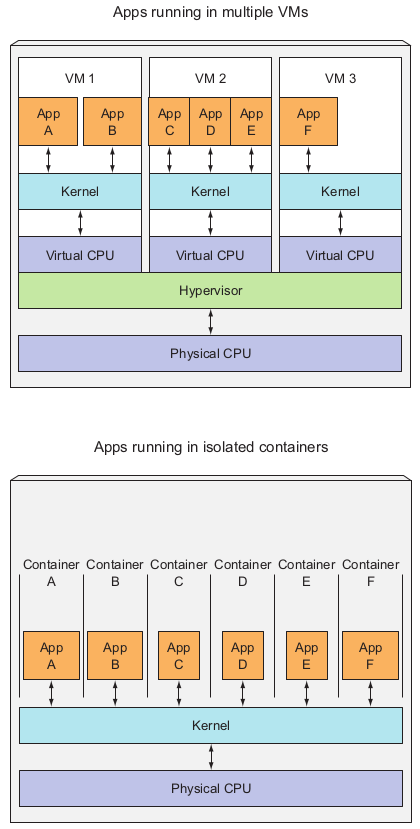

class: title, self-paced Introduction to Containers<br/>and Docker<br/> .nav[*Self-paced version*] .debug[ ``` M common/about-slides_fr.md M dock-kube-day1.yml.html M dock-kube-day2.yml.html M dock-kube-day3.yml.html M dock-kube-day4.yml.html M intro-fullday.yml.html M intro-selfpaced.yml.html M kube-day1.yml.html M kube-fullday.yml.html M kube-halfday.yml.html M kube-jour1.yml M kube-jour1.yml.html M kube-jour2.yml.html M kube-jour3.yml.html M kube-selfpaced.yml.html M override.css M spark-day2-PE.yml M spark-day2-PE.yml.html M swarm-fullday.yml.html M swarm-halfday.yml.html M swarm-selfpaced.yml.html M swarm-video.yml.html ?? .directory ?? common/.directory ?? index_kube.html ?? intro/.directory ?? kube/.directory ?? kube/tp_wordpress.md ?? logistics_david.md ?? swarm/.directory ?? tp_wordpress.yml ?? tp_wordpress.yml.html ``` These slides have been built from commit: f75841c [shared/title.md](https://github.com/RyaxTech/kube.training.git/tree/gh-pages//shared/title.md)] --- class: title, in-person Introduction to Containers<br/>and Docker<br/><br/></br> .debug[[shared/title.md](https://github.com/RyaxTech/kube.training.git/tree/gh-pages//shared/title.md)] --- ## Some infos about the instructor - Yiannis Georgiou - CTO Ryax Technologies - PhD Université Grenoble-Alpes - Resource Management and Scheduling on High Performance Computing - 11 ans at Bull/Atos Technologies - R&D Architect / Software Engineer .debug[[logistics.md](https://github.com/RyaxTech/kube.training.git/tree/gh-pages//logistics.md)] --- ## Logistics - The training will take place from 9h until 17h30 - There will be a break for lunch from 12h30 to 14h - Feel free to interrupt for questions at any time - Especially when you see full screen container pictures! .debug[[logistics.md](https://github.com/RyaxTech/kube.training.git/tree/gh-pages//logistics.md)] --- ## About the slides - The content of the training is based on the slides maintained by [Jérôme Petazzoni](https://twitter.com/jpetazzo) and [multiple contributors](https://@@GITREPO@@/graphs/contributors) under [container.training](https://github.com/jpetazzo/container.training) to support workshops and tutorials for Containers and Kubernetes. - We included exercises with as much information as possible in the slides. The goal is to try to execute the exercises during the training. In case some are skipped because of time constraints you are encouraged to complete them on your own. - In case you have further questions you can search in the official Docker [documentation](https://docs.docker.com/) - ... and looking for answers in sites such as [Docker forums](forums.docker.com) and [StackOverflow](http://stackoverflow.com/questions/tagged/docker) .debug[[containers/intro.md](https://github.com/RyaxTech/kube.training.git/tree/gh-pages//containers/intro.md)] --- name: toc-chapter-1 ## Chapter 1 - [Docker 30,000ft overview](#toc-docker-ft-overview) - [History of containers ... and Docker](#toc-history-of-containers--and-docker) - [Our training environment](#toc-our-training-environment) - [Pre-requirements](#toc-pre-requirements) - [Installing Docker](#toc-installing-docker) - [Our first containers](#toc-our-first-containers) - [Background containers](#toc-background-containers) - [Restarting and attaching to containers](#toc-restarting-and-attaching-to-containers) .debug[(auto-generated TOC)] --- name: toc-chapter-2 ## Chapter 2 - [Understanding Docker images](#toc-understanding-docker-images) - [Building images interactively](#toc-building-images-interactively) - [Building Docker images with a Dockerfile](#toc-building-docker-images-with-a-dockerfile) - [`CMD` and `ENTRYPOINT`](#toc-cmd-and-entrypoint) - [Copying files during the build](#toc-copying-files-during-the-build) .debug[(auto-generated TOC)] --- name: toc-chapter-3 ## Chapter 3 - [Reducing image size](#toc-reducing-image-size) - [Multi-stage builds](#toc-multi-stage-builds) - [Publishing images to the Docker Hub](#toc-publishing-images-to-the-docker-hub) - [Tips for efficient Dockerfiles](#toc-tips-for-efficient-dockerfiles) - [Dockerfile examples](#toc-dockerfile-examples) .debug[(auto-generated TOC)] --- name: toc-chapter-4 ## Chapter 4 - [Naming and inspecting containers](#toc-naming-and-inspecting-containers) - [Labels](#toc-labels) - [Getting inside a container](#toc-getting-inside-a-container) .debug[(auto-generated TOC)] --- name: toc-chapter-5 ## Chapter 5 - [Docker Engine and other container engines](#toc-docker-engine-and-other-container-engines) - [The container ecosystem](#toc-the-container-ecosystem) - [Orchestration, an overview](#toc-orchestration-an-overview) - [Links and resources](#toc-links-and-resources) .debug[(auto-generated TOC)] .debug[[shared/toc.md](https://github.com/RyaxTech/kube.training.git/tree/gh-pages//shared/toc.md)] --- class: pic .interstitial[] --- name: toc-docker-ft-overview class: title Docker 30,000ft overview .nav[ [Section précédente](#toc-) | [Retour table des matières](#toc-chapter-1) | [Section suivante](#toc-history-of-containers--and-docker) ] .debug[(automatically generated title slide)] --- # Docker 30,000ft overview In this lesson, we will learn about: * Why containers (non-technical elevator pitch) * Why containers (technical elevator pitch) * How Docker helps us to build, ship, and run * The history of containers We won't actually run Docker or containers in this chapter (yet!). Don't worry, we will get to that fast enough! .debug[[containers/Docker_Overview.md](https://github.com/RyaxTech/kube.training.git/tree/gh-pages//containers/Docker_Overview.md)] --- ## Elevator pitch ### (for your manager, your boss...) .debug[[containers/Docker_Overview.md](https://github.com/RyaxTech/kube.training.git/tree/gh-pages//containers/Docker_Overview.md)] --- ## OK... Why the buzz around containers? * The software industry has changed * Before: * monolithic applications * long development cycles * single environment * slowly scaling up * Now: * decoupled services * fast, iterative improvements * multiple environments * quickly scaling out .debug[[containers/Docker_Overview.md](https://github.com/RyaxTech/kube.training.git/tree/gh-pages//containers/Docker_Overview.md)] --- ## Deployment becomes very complex * Many different stacks: * languages * frameworks * databases * Many different targets: * individual development environments * pre-production, QA, staging... * production: on prem, cloud, hybrid .debug[[containers/Docker_Overview.md](https://github.com/RyaxTech/kube.training.git/tree/gh-pages//containers/Docker_Overview.md)] --- class: pic ## The deployment problem  .debug[[containers/Docker_Overview.md](https://github.com/RyaxTech/kube.training.git/tree/gh-pages//containers/Docker_Overview.md)] --- class: pic ## The matrix from hell  .debug[[containers/Docker_Overview.md](https://github.com/RyaxTech/kube.training.git/tree/gh-pages//containers/Docker_Overview.md)] --- class: pic ## The parallel with the shipping industry  .debug[[containers/Docker_Overview.md](https://github.com/RyaxTech/kube.training.git/tree/gh-pages//containers/Docker_Overview.md)] --- class: pic ## Intermodal shipping containers  .debug[[containers/Docker_Overview.md](https://github.com/RyaxTech/kube.training.git/tree/gh-pages//containers/Docker_Overview.md)] --- class: pic ## A new shipping ecosystem  .debug[[containers/Docker_Overview.md](https://github.com/RyaxTech/kube.training.git/tree/gh-pages//containers/Docker_Overview.md)] --- class: pic ## A shipping container system for applications  .debug[[containers/Docker_Overview.md](https://github.com/RyaxTech/kube.training.git/tree/gh-pages//containers/Docker_Overview.md)] --- class: pic ## Eliminate the matrix from hell  .debug[[containers/Docker_Overview.md](https://github.com/RyaxTech/kube.training.git/tree/gh-pages//containers/Docker_Overview.md)] --- ## Results * [Dev-to-prod reduced from 9 months to 15 minutes (ING)]( https://www.docker.com/sites/default/files/CS_ING_01.25.2015_1.pdf) * [Continuous integration job time reduced by more than 60% (BBC)]( https://www.docker.com/sites/default/files/CS_BBCNews_01.25.2015_1.pdf) * [Deploy 100 times a day instead of once a week (GILT)]( https://www.docker.com/sites/default/files/CS_Gilt%20Groupe_03.18.2015_0.pdf) * [70% infrastructure consolidation (MetLife)]( https://www.docker.com/customers/metlife-transforms-customer-experience-legacy-and-microservices-mashup) * [60% infrastructure consolidation (Intesa Sanpaolo)]( https://blog.docker.com/2017/11/intesa-sanpaolo-builds-resilient-foundation-banking-docker-enterprise-edition/) * [14x application density; 60% of legacy datacenter migrated in 4 months (GE Appliances)]( https://www.docker.com/customers/ge-uses-docker-enable-self-service-their-developers) * etc. .debug[[containers/Docker_Overview.md](https://github.com/RyaxTech/kube.training.git/tree/gh-pages//containers/Docker_Overview.md)] --- ## Elevator pitch ### (for your fellow devs and ops) .debug[[containers/Docker_Overview.md](https://github.com/RyaxTech/kube.training.git/tree/gh-pages//containers/Docker_Overview.md)] --- ## Escape dependency hell 1. Write installation instructions into an `INSTALL.txt` file 2. Using this file, write an `install.sh` script that works *for you* 3. Turn this file into a `Dockerfile`, test it on your machine 4. If the Dockerfile builds on your machine, it will build *anywhere* 5. Rejoice as you escape dependency hell and "works on my machine" Never again "worked in dev - ops problem now!" .debug[[containers/Docker_Overview.md](https://github.com/RyaxTech/kube.training.git/tree/gh-pages//containers/Docker_Overview.md)] --- ## On-board developers and contributors rapidly 1. Write Dockerfiles for your application components 2. Use pre-made images from the Docker Hub (mysql, redis...) 3. Describe your stack with a Compose file 4. On-board somebody with two commands: ```bash git clone ... docker-compose up ``` With this, you can create development, integration, QA environments in minutes! .debug[[containers/Docker_Overview.md](https://github.com/RyaxTech/kube.training.git/tree/gh-pages//containers/Docker_Overview.md)] --- class: extra-details ## Implement reliable CI easily 1. Build test environment with a Dockerfile or Compose file 2. For each test run, stage up a new container or stack 3. Each run is now in a clean environment 4. No pollution from previous tests Way faster and cheaper than creating VMs each time! .debug[[containers/Docker_Overview.md](https://github.com/RyaxTech/kube.training.git/tree/gh-pages//containers/Docker_Overview.md)] --- class: extra-details ## Use container images as build artefacts 1. Build your app from Dockerfiles 2. Store the resulting images in a registry 3. Keep them forever (or as long as necessary) 4. Test those images in QA, CI, integration... 5. Run the same images in production 6. Something goes wrong? Rollback to previous image 7. Investigating old regression? Old image has your back! Images contain all the libraries, dependencies, etc. needed to run the app. .debug[[containers/Docker_Overview.md](https://github.com/RyaxTech/kube.training.git/tree/gh-pages//containers/Docker_Overview.md)] --- class: extra-details ## Decouple "plumbing" from application logic 1. Write your code to connect to named services ("db", "api"...) 2. Use Compose to start your stack 3. Docker will setup per-container DNS resolver for those names 4. You can now scale, add load balancers, replication ... without changing your code Note: this is not covered in this intro level workshop! .debug[[containers/Docker_Overview.md](https://github.com/RyaxTech/kube.training.git/tree/gh-pages//containers/Docker_Overview.md)] --- class: extra-details ## What did Docker bring to the table? ### Docker before/after .debug[[containers/Docker_Overview.md](https://github.com/RyaxTech/kube.training.git/tree/gh-pages//containers/Docker_Overview.md)] --- class: extra-details ## Formats and APIs, before Docker * No standardized exchange format. <br/>(No, a rootfs tarball is *not* a format!) * Containers are hard to use for developers. <br/>(Where's the equivalent of `docker run debian`?) * As a result, they are *hidden* from the end users. * No re-usable components, APIs, tools. <br/>(At best: VM abstractions, e.g. libvirt.) Analogy: * Shipping containers are not just steel boxes. * They are steel boxes that are a standard size, with the same hooks and holes. .debug[[containers/Docker_Overview.md](https://github.com/RyaxTech/kube.training.git/tree/gh-pages//containers/Docker_Overview.md)] --- class: extra-details ## Formats and APIs, after Docker * Standardize the container format, because containers were not portable. * Make containers easy to use for developers. * Emphasis on re-usable components, APIs, ecosystem of standard tools. * Improvement over ad-hoc, in-house, specific tools. .debug[[containers/Docker_Overview.md](https://github.com/RyaxTech/kube.training.git/tree/gh-pages//containers/Docker_Overview.md)] --- class: extra-details ## Shipping, before Docker * Ship packages: deb, rpm, gem, jar, homebrew... * Dependency hell. * "Works on my machine." * Base deployment often done from scratch (debootstrap...) and unreliable. .debug[[containers/Docker_Overview.md](https://github.com/RyaxTech/kube.training.git/tree/gh-pages//containers/Docker_Overview.md)] --- class: extra-details ## Shipping, after Docker * Ship container images with all their dependencies. * Images are bigger, but they are broken down into layers. * Only ship layers that have changed. * Save disk, network, memory usage. .debug[[containers/Docker_Overview.md](https://github.com/RyaxTech/kube.training.git/tree/gh-pages//containers/Docker_Overview.md)] --- class: extra-details ## Example Layers: * CentOS * JRE * Tomcat * Dependencies * Application JAR * Configuration .debug[[containers/Docker_Overview.md](https://github.com/RyaxTech/kube.training.git/tree/gh-pages//containers/Docker_Overview.md)] --- class: extra-details ## Devs vs Ops, before Docker * Drop a tarball (or a commit hash) with instructions. * Dev environment very different from production. * Ops don't always have a dev environment themselves ... * ... and when they do, it can differ from the devs'. * Ops have to sort out differences and make it work ... * ... or bounce it back to devs. * Shipping code causes frictions and delays. .debug[[containers/Docker_Overview.md](https://github.com/RyaxTech/kube.training.git/tree/gh-pages//containers/Docker_Overview.md)] --- class: extra-details ## Devs vs Ops, after Docker * Drop a container image or a Compose file. * Ops can always run that container image. * Ops can always run that Compose file. * Ops still have to adapt to prod environment, but at least they have a reference point. * Ops have tools allowing to use the same image in dev and prod. * Devs can be empowered to make releases themselves more easily. .debug[[containers/Docker_Overview.md](https://github.com/RyaxTech/kube.training.git/tree/gh-pages//containers/Docker_Overview.md)] --- class: pic .interstitial[] --- name: toc-history-of-containers--and-docker class: title History of containers ... and Docker .nav[ [Section précédente](#toc-docker-ft-overview) | [Retour table des matières](#toc-chapter-1) | [Section suivante](#toc-our-training-environment) ] .debug[(automatically generated title slide)] --- # History of containers ... and Docker .debug[[containers/Docker_History.md](https://github.com/RyaxTech/kube.training.git/tree/gh-pages//containers/Docker_History.md)] --- ## First experimentations * [IBM VM/370 (1972)](https://en.wikipedia.org/wiki/VM_%28operating_system%29) * [Linux VServers (2001)](http://www.solucorp.qc.ca/changes.hc?projet=vserver) * [Solaris Containers (2004)](https://en.wikipedia.org/wiki/Solaris_Containers) * [FreeBSD jails (1999-2000)](https://www.freebsd.org/cgi/man.cgi?query=jail&sektion=8&manpath=FreeBSD+4.0-RELEASE) Containers have been around for a *very long time* indeed. (See [this excellent blog post by Serge Hallyn](https://s3hh.wordpress.com/2018/03/22/history-of-containers/) for more historic details.) .debug[[containers/Docker_History.md](https://github.com/RyaxTech/kube.training.git/tree/gh-pages//containers/Docker_History.md)] --- class: pic ## The VPS age (until 2007-2008)  .debug[[containers/Docker_History.md](https://github.com/RyaxTech/kube.training.git/tree/gh-pages//containers/Docker_History.md)] --- class: pic ## Isolating applications with VMs vs Containers  .debug[[containers/Docker_History.md](https://github.com/RyaxTech/kube.training.git/tree/gh-pages//containers/Docker_History.md)] --- class: pic ## Applications using CPUs in VMs vs Containers  .debug[[containers/Docker_History.md](https://github.com/RyaxTech/kube.training.git/tree/gh-pages//containers/Docker_History.md)] --- ## Containers = cheaper than VMs * Users: hosting providers. * Highly specialized audience with strong ops culture. .debug[[containers/Docker_History.md](https://github.com/RyaxTech/kube.training.git/tree/gh-pages//containers/Docker_History.md)] --- class: pic ## The PAAS period (2008-2013)  .debug[[containers/Docker_History.md](https://github.com/RyaxTech/kube.training.git/tree/gh-pages//containers/Docker_History.md)] --- ## Containers = easier than VMs * I can't speak for Heroku, but containers were (one of) dotCloud's secret weapon * dotCloud was operating a PaaS, using a custom container engine. * This engine was based on OpenVZ (and later, LXC) and AUFS. * It started (circa 2008) as a single Python script. * By 2012, the engine had multiple (~10) Python components. <br/>(and ~100 other micro-services!) * End of 2012, dotCloud refactors this container engine. * The codename for this project is "Docker." .debug[[containers/Docker_History.md](https://github.com/RyaxTech/kube.training.git/tree/gh-pages//containers/Docker_History.md)] --- ## First public release of Docker * March 2013, PyCon, Santa Clara: <br/>"Docker" is shown to a public audience for the first time. * It is released with an open source license. * Very positive reactions and feedback! * The dotCloud team progressively shifts to Docker development. * The same year, dotCloud changes name to Docker. * In 2014, the PaaS activity is sold. .debug[[containers/Docker_History.md](https://github.com/RyaxTech/kube.training.git/tree/gh-pages//containers/Docker_History.md)] --- ## Docker early days (2013-2014) .debug[[containers/Docker_History.md](https://github.com/RyaxTech/kube.training.git/tree/gh-pages//containers/Docker_History.md)] --- ## First users of Docker * PAAS builders (Flynn, Dokku, Tsuru, Deis...) * PAAS users (those big enough to justify building their own) * CI platforms * developers, developers, developers, developers .debug[[containers/Docker_History.md](https://github.com/RyaxTech/kube.training.git/tree/gh-pages//containers/Docker_History.md)] --- ## Positive feedback loop * In 2013, the technology under containers (cgroups, namespaces, copy-on-write storage...) had many blind spots. * The growing popularity of Docker and containers exposed many bugs. * As a result, those bugs were fixed, resulting in better stability for containers. * Any decent hosting/cloud provider can run containers today. * Containers become a great tool to deploy/move workloads to/from on-prem/cloud. .debug[[containers/Docker_History.md](https://github.com/RyaxTech/kube.training.git/tree/gh-pages//containers/Docker_History.md)] --- ## Maturity (2015-2016) .debug[[containers/Docker_History.md](https://github.com/RyaxTech/kube.training.git/tree/gh-pages//containers/Docker_History.md)] --- ## Docker becomes an industry standard * Docker reaches the symbolic 1.0 milestone. * Existing systems like Mesos and Cloud Foundry add Docker support. * Standardization around the OCI (Open Containers Initiative). * Other container engines are developed. * Creation of the CNCF (Cloud Native Computing Foundation). .debug[[containers/Docker_History.md](https://github.com/RyaxTech/kube.training.git/tree/gh-pages//containers/Docker_History.md)] --- ## Docker becomes a platform * The initial container engine is now known as "Docker Engine." * Other tools are added: * Docker Compose (formerly "Fig") * Docker Machine * Docker Swarm * Kitematic * Docker Cloud (formerly "Tutum") * Docker Datacenter * etc. * Docker Inc. launches commercial offers. .debug[[containers/Docker_History.md](https://github.com/RyaxTech/kube.training.git/tree/gh-pages//containers/Docker_History.md)] --- class: pic .interstitial[] --- name: toc-our-training-environment class: title Our training environment .nav[ [Section précédente](#toc-history-of-containers--and-docker) | [Retour table des matières](#toc-chapter-1) | [Section suivante](#toc-pre-requirements) ] .debug[(automatically generated title slide)] --- class: title # Our training environment  .debug[[containers/Training_Environment.md](https://github.com/RyaxTech/kube.training.git/tree/gh-pages//containers/Training_Environment.md)] --- class: pic .interstitial[] --- name: toc-pre-requirements class: title Pre-requirements .nav[ [Section précédente](#toc-our-training-environment) | [Retour table des matières](#toc-chapter-1) | [Section suivante](#toc-installing-docker) ] .debug[(automatically generated title slide)] --- # Pre-requirements - Be comfortable with the UNIX command line - navigating directories - editing files - a little bit of bash (environment variables, loops) .debug[[containers/Training_Environment.md](https://github.com/RyaxTech/kube.training.git/tree/gh-pages//containers/Training_Environment.md)] --- class: title *Tell me and I forget.* <br/> *Teach me and I remember.* <br/> *Involve me and I learn.* Misattributed to Benjamin Franklin [(Probably inspired by Chinese Confucian philosopher Xunzi)](https://www.barrypopik.com/index.php/new_york_city/entry/tell_me_and_i_forget_teach_me_and_i_may_remember_involve_me_and_i_will_lear/) .debug[[containers/Training_Environment.md](https://github.com/RyaxTech/kube.training.git/tree/gh-pages//containers/Training_Environment.md)] --- ## Hands-on sections - The whole workshop is hands-on - We are going to build, ship, and run containers! - You are invited to reproduce all the demos - All hands-on sections are clearly identified, like the gray rectangle below .exercise[ - This is the stuff you're supposed to do! - Go to [kube.training](https://ryaxtech.github.io/kube.training/) to view these slides ] .debug[[containers/Training_Environment.md](https://github.com/RyaxTech/kube.training.git/tree/gh-pages//containers/Training_Environment.md)] --- class: in-person ## Where are we going to run our containers? .debug[[containers/Training_Environment.md](https://github.com/RyaxTech/kube.training.git/tree/gh-pages//containers/Training_Environment.md)] --- class: in-person, pic  .debug[[containers/Training_Environment.md](https://github.com/RyaxTech/kube.training.git/tree/gh-pages//containers/Training_Environment.md)] --- class: in-person ## You get a cluster of cloud VMs - Each person (or team of 2 persons) gets a private cluster of cloud VMs - They'll remain up for the duration of the workshop - You can automatically SSH from one VM to another - The nodes have aliases: `node1`, `node2`, etc. - For now we will only use the first machine. .debug[[containers/Training_Environment.md](https://github.com/RyaxTech/kube.training.git/tree/gh-pages//containers/Training_Environment.md)] --- ## Our Cluster of VMs *Each student (or team of 2 students) is given a cluster of 3 VMs.* - It will stay up during the whole training. - It will be destroyed shortly after the training. - It comes pre-loaded with Docker, Kubernetes and some other useful tools. - Initially we will use Docker on 1 single VM. .debug[[containers/Training_Environment.md](https://github.com/RyaxTech/kube.training.git/tree/gh-pages//containers/Training_Environment.md)] --- ## What *is* Docker? - "Installing Docker" really means "Installing the Docker Engine and CLI". - The Docker Engine is a daemon (a service running in the background). - This daemon manages containers, the same way that an hypervisor manages VMs. - We interact with the Docker Engine by using the Docker CLI. - The Docker CLI and the Docker Engine communicate through an API. - There are many other programs, and many client libraries, to use that API. .debug[[containers/Training_Environment.md](https://github.com/RyaxTech/kube.training.git/tree/gh-pages//containers/Training_Environment.md)] --- ## Why don't we run Docker locally? - We are going to download container images and distribution packages. - This could put a bit of stress on the local WiFi and slow us down. - Instead, we use a remote VM that has a good connectivity - In some rare cases, installing Docker locally is challenging: - no administrator/root access (computer managed by strict corp IT) - 32-bit CPU or OS - old OS version (e.g. CentOS 6, OSX pre-Yosemite, Windows 7) - It's better to spend time learning containers than fiddling with the installer! .debug[[containers/Training_Environment.md](https://github.com/RyaxTech/kube.training.git/tree/gh-pages//containers/Training_Environment.md)] --- ## Connecting to your Virtual Machine You need an SSH client. * On OS X, Linux, and other UNIX systems, just use `ssh`: ```bash $ ssh <login>@<ip-address> ``` * On Windows, if you don't have an SSH client, you can download and use: * Putty (www.putty.org) .debug[[containers/Training_Environment.md](https://github.com/RyaxTech/kube.training.git/tree/gh-pages//containers/Training_Environment.md)] --- ## Checking your Virtual Machine Once logged in, make sure that you can run a basic Docker command: .small[ ```bash $ docker version Client: Version: 18.03.0-ce API version: 1.37 Go version: go1.9.4 Git commit: 0520e24 Built: Wed Mar 21 23:10:06 2018 OS/Arch: linux/amd64 Experimental: false Orchestrator: swarm Server: Engine: Version: 18.03.0-ce API version: 1.37 (minimum version 1.12) Go version: go1.9.4 Git commit: 0520e24 Built: Wed Mar 21 23:08:35 2018 OS/Arch: linux/amd64 Experimental: false ``` ] If this doesn't work, raise your hand! .debug[[containers/Training_Environment.md](https://github.com/RyaxTech/kube.training.git/tree/gh-pages//containers/Training_Environment.md)] --- class: pic .interstitial[] --- name: toc-installing-docker class: title Installing Docker .nav[ [Section précédente](#toc-pre-requirements) | [Retour table des matières](#toc-chapter-1) | [Section suivante](#toc-our-first-containers) ] .debug[(automatically generated title slide)] --- class: title # Installing Docker  .debug[[containers/Installing_Docker.md](https://github.com/RyaxTech/kube.training.git/tree/gh-pages//containers/Installing_Docker.md)] --- ## Objectives At the end of this lesson, you will know: * How to install Docker. * When to use `sudo` when running Docker commands. *Note:* For our training Docker has already been setup to run without `sudo` on your VMs. But we still present it so that you can do it on your own after the training. .debug[[containers/Installing_Docker.md](https://github.com/RyaxTech/kube.training.git/tree/gh-pages//containers/Installing_Docker.md)] --- ## Installing Docker There are many ways to install Docker. We can arbitrarily distinguish: * Installing Docker on an existing Linux machine (physical or VM) * Installing Docker on macOS or Windows * Installing Docker on a fleet of cloud VMs .debug[[containers/Installing_Docker.md](https://github.com/RyaxTech/kube.training.git/tree/gh-pages//containers/Installing_Docker.md)] --- ## Installing Docker on Linux * The recommended method is to install the packages supplied by Docker Inc.: https://store.docker.com * The general method is: - add Docker Inc.'s package repositories to your system configuration - install the Docker Engine * Detailed installation instructions (distro by distro) are available on: https://docs.docker.com/engine/installation/ * You can also install from binaries (if your distro is not supported): https://docs.docker.com/engine/installation/linux/docker-ce/binaries/ .debug[[containers/Installing_Docker.md](https://github.com/RyaxTech/kube.training.git/tree/gh-pages//containers/Installing_Docker.md)] --- class: extra-details ## Docker Inc. packages vs distribution packages * Docker Inc. releases new versions monthly (edge) and quarterly (stable) * Releases are immediately available on Docker Inc.'s package repositories * Linux distros don't always update to the latest Docker version (Sometimes, updating would break their guidelines for major/minor upgrades) * Sometimes, some distros have carried packages with custom patches * Sometimes, these patches added critical security bugs ☹ * Installing through Docker Inc.'s repositories is a bit of extra work … … but it is generally worth it! .debug[[containers/Installing_Docker.md](https://github.com/RyaxTech/kube.training.git/tree/gh-pages//containers/Installing_Docker.md)] --- ## Installing Docker on macOS and Windows * On macOS, the recommended method is to use Docker for Mac: https://docs.docker.com/docker-for-mac/install/ * On Windows 10 Pro, Enterprise, and Education, you can use Docker for Windows: https://docs.docker.com/docker-for-windows/install/ * On older versions of Windows, you can use the Docker Toolbox: https://docs.docker.com/toolbox/toolbox_install_windows/ * On Windows Server 2016, you can also install the native engine: https://docs.docker.com/install/windows/docker-ee/ .debug[[containers/Installing_Docker.md](https://github.com/RyaxTech/kube.training.git/tree/gh-pages//containers/Installing_Docker.md)] --- ## Docker for Mac and Docker for Windows * Special Docker Editions that integrate well with their respective host OS * Provide user-friendly GUI to edit Docker configuration and settings * Leverage the host OS virtualization subsystem (e.g. the [Hypervisor API](https://developer.apple.com/documentation/hypervisor) on macOS) * Installed like normal user applications on the host * Under the hood, they both run a tiny VM (transparent to our daily use) * Access network resources like normal applications <br/>(and therefore, play better with enterprise VPNs and firewalls) * Support filesystem sharing through volumes (we'll talk about this later) * They only support running one Docker VM at a time ... <br/> ... but we can use `docker-machine`, the Docker Toolbox, VirtualBox, etc. to get a cluster. .debug[[containers/Installing_Docker.md](https://github.com/RyaxTech/kube.training.git/tree/gh-pages//containers/Installing_Docker.md)] --- ## Running Docker on macOS and Windows When you execute `docker version` from the terminal: * the CLI connects to the Docker Engine over a standard socket, * the Docker Engine is, in fact, running in a VM, * ... but the CLI doesn't know or care about that, * the CLI sends a request using the REST API, * the Docker Engine in the VM processes the request, * the CLI gets the response and displays it to you. All communication with the Docker Engine happens over the API. This will also allow to use remote Engines exactly as if they were local. .debug[[containers/Installing_Docker.md](https://github.com/RyaxTech/kube.training.git/tree/gh-pages//containers/Installing_Docker.md)] --- ## Important PSA about security * If you have access to the Docker control socket, you can take over the machine (Because you can run containers that will access the machine's resources) * Therefore, on Linux machines, the `docker` user is equivalent to `root` * You should restrict access to it like you would protect `root` * By default, the Docker control socket belongs to the `docker` group * You can add trusted users to the `docker` group * Otherwise, you will have to prefix every `docker` command with `sudo`, e.g.: ```bash sudo docker version ``` .debug[[containers/Installing_Docker.md](https://github.com/RyaxTech/kube.training.git/tree/gh-pages//containers/Installing_Docker.md)] --- class: pic .interstitial[] --- name: toc-our-first-containers class: title Our first containers .nav[ [Section précédente](#toc-installing-docker) | [Retour table des matières](#toc-chapter-1) | [Section suivante](#toc-background-containers) ] .debug[(automatically generated title slide)] --- class: title # Our first containers  .debug[[containers/First_Containers.md](https://github.com/RyaxTech/kube.training.git/tree/gh-pages//containers/First_Containers.md)] --- ## Objectives At the end of this lesson, you will have: * Seen Docker in action. * Started your first containers. .debug[[containers/First_Containers.md](https://github.com/RyaxTech/kube.training.git/tree/gh-pages//containers/First_Containers.md)] --- ## Hello World In your Docker environment, just run the following command: ```bash $ docker run busybox echo hello world hello world ``` (If your Docker install is brand new, you will also see a few extra lines, corresponding to the download of the `busybox` image.) .debug[[containers/First_Containers.md](https://github.com/RyaxTech/kube.training.git/tree/gh-pages//containers/First_Containers.md)] --- ## That was our first container! * We used one of the smallest, simplest images available: `busybox`. * `busybox` is typically used in embedded systems (phones, routers...) * We ran a single process and echo'ed `hello world`. .debug[[containers/First_Containers.md](https://github.com/RyaxTech/kube.training.git/tree/gh-pages//containers/First_Containers.md)] --- ## A more useful container Let's run a more exciting container: ```bash $ docker run -it ubuntu root@04c0bb0a6c07:/# ``` * This is a brand new container. * It runs a bare-bones, no-frills `ubuntu` system. * `-it` is shorthand for `-i -t`. * `-i` tells Docker to connect us to the container's stdin. * `-t` tells Docker that we want a pseudo-terminal. .debug[[containers/First_Containers.md](https://github.com/RyaxTech/kube.training.git/tree/gh-pages//containers/First_Containers.md)] --- ## Do something in our container Try to run `figlet` in our container. ```bash root@04c0bb0a6c07:/# figlet hello bash: figlet: command not found ``` Alright, we need to install it. .debug[[containers/First_Containers.md](https://github.com/RyaxTech/kube.training.git/tree/gh-pages//containers/First_Containers.md)] --- ## Install a package in our container We want `figlet`, so let's install it: ```bash root@04c0bb0a6c07:/# apt-get update ... Fetched 1514 kB in 14s (103 kB/s) Reading package lists... Done root@04c0bb0a6c07:/# apt-get install figlet Reading package lists... Done ... ``` One minute later, `figlet` is installed! .debug[[containers/First_Containers.md](https://github.com/RyaxTech/kube.training.git/tree/gh-pages//containers/First_Containers.md)] --- ## Try to run our freshly installed program The `figlet` program takes a message as parameter. ```bash root@04c0bb0a6c07:/# figlet hello _ _ _ | |__ ___| | | ___ | '_ \ / _ \ | |/ _ \ | | | | __/ | | (_) | |_| |_|\___|_|_|\___/ ``` Beautiful! .emoji[😍] .debug[[containers/First_Containers.md](https://github.com/RyaxTech/kube.training.git/tree/gh-pages//containers/First_Containers.md)] --- class: in-person ## Counting packages in the container Let's check how many packages are installed there. ```bash root@04c0bb0a6c07:/# dpkg -l | wc -l 190 ``` * `dpkg -l` lists the packages installed in our container * `wc -l` counts them How many packages do we have on our host? .debug[[containers/First_Containers.md](https://github.com/RyaxTech/kube.training.git/tree/gh-pages//containers/First_Containers.md)] --- class: in-person ## Counting packages on the host Exit the container by logging out of the shell, like you would usually do. (E.g. with `^D` or `exit`) ```bash root@04c0bb0a6c07:/# exit ``` Now, try to: * run `dpkg -l | wc -l`. How many packages are installed? * run `figlet`. Does that work? .debug[[containers/First_Containers.md](https://github.com/RyaxTech/kube.training.git/tree/gh-pages//containers/First_Containers.md)] --- class: self-paced ## Comparing the container and the host Exit the container by logging out of the shell, with `^D` or `exit`. Now try to run `figlet`. Does that work? (It shouldn't; except if, by coincidence, you are running on a machine where figlet was installed before.) .debug[[containers/First_Containers.md](https://github.com/RyaxTech/kube.training.git/tree/gh-pages//containers/First_Containers.md)] --- ## Host and containers are independent things * We ran an `ubuntu` container on an Linux/Windows/macOS host. * They have different, independent packages. * Installing something on the host doesn't expose it to the container. * And vice-versa. * Even if both the host and the container have the same Linux distro! * We can run *any container* on *any host*. (One exception: Windows containers cannot run on Linux machines; at least not yet.) .debug[[containers/First_Containers.md](https://github.com/RyaxTech/kube.training.git/tree/gh-pages//containers/First_Containers.md)] --- ## Where's our container? * Our container is now in a *stopped* state. * It still exists on disk, but all compute resources have been freed up. * We will see later how to get back to that container. .debug[[containers/First_Containers.md](https://github.com/RyaxTech/kube.training.git/tree/gh-pages//containers/First_Containers.md)] --- ## Starting another container What if we start a new container, and try to run `figlet` again? ```bash $ docker run -it ubuntu root@b13c164401fb:/# figlet bash: figlet: command not found ``` * We started a *brand new container*. * The basic Ubuntu image was used, and `figlet` is not here. * We will see in the next chapters how to bake a custom image with `figlet`. .debug[[containers/First_Containers.md](https://github.com/RyaxTech/kube.training.git/tree/gh-pages//containers/First_Containers.md)] --- class: pic .interstitial[] --- name: toc-background-containers class: title Background containers .nav[ [Section précédente](#toc-our-first-containers) | [Retour table des matières](#toc-chapter-1) | [Section suivante](#toc-restarting-and-attaching-to-containers) ] .debug[(automatically generated title slide)] --- class: title # Background containers  .debug[[containers/Background_Containers.md](https://github.com/RyaxTech/kube.training.git/tree/gh-pages//containers/Background_Containers.md)] --- ## Objectives Our first containers were *interactive*. We will now see how to: * Run a non-interactive container. * Run a container in the background. * List running containers. * Check the logs of a container. * Stop a container. * List stopped containers. .debug[[containers/Background_Containers.md](https://github.com/RyaxTech/kube.training.git/tree/gh-pages//containers/Background_Containers.md)] --- ## A non-interactive container We will run a small custom container. This container just displays the time every second. ```bash $ docker run jpetazzo/clock Fri Feb 20 00:28:53 UTC 2015 Fri Feb 20 00:28:54 UTC 2015 Fri Feb 20 00:28:55 UTC 2015 ... ``` * This container will run forever. * To stop it, press `^C`. * Docker has automatically downloaded the image `jpetazzo/clock`. * This image is a user image, created by `jpetazzo`. * We will hear more about user images (and other types of images) later. .debug[[containers/Background_Containers.md](https://github.com/RyaxTech/kube.training.git/tree/gh-pages//containers/Background_Containers.md)] --- ## Run a container in the background Containers can be started in the background, with the `-d` flag (daemon mode): ```bash $ docker run -d jpetazzo/clock 47d677dcfba4277c6cc68fcaa51f932b544cab1a187c853b7d0caf4e8debe5ad ``` * We don't see the output of the container. * But don't worry: Docker collects that output and logs it! * Docker gives us the ID of the container. .debug[[containers/Background_Containers.md](https://github.com/RyaxTech/kube.training.git/tree/gh-pages//containers/Background_Containers.md)] --- ## List running containers How can we check that our container is still running? With `docker ps`, just like the UNIX `ps` command, lists running processes. ```bash $ docker ps CONTAINER ID IMAGE ... CREATED STATUS ... 47d677dcfba4 jpetazzo/clock ... 2 minutes ago Up 2 minutes ... ``` Docker tells us: * The (truncated) ID of our container. * The image used to start the container. * That our container has been running (`Up`) for a couple of minutes. * Other information (COMMAND, PORTS, NAMES) that we will explain later. .debug[[containers/Background_Containers.md](https://github.com/RyaxTech/kube.training.git/tree/gh-pages//containers/Background_Containers.md)] --- ## Starting more containers Let's start two more containers. ```bash $ docker run -d jpetazzo/clock 57ad9bdfc06bb4407c47220cf59ce21585dce9a1298d7a67488359aeaea8ae2a ``` ```bash $ docker run -d jpetazzo/clock 068cc994ffd0190bbe025ba74e4c0771a5d8f14734af772ddee8dc1aaf20567d ``` Check that `docker ps` correctly reports all 3 containers. .debug[[containers/Background_Containers.md](https://github.com/RyaxTech/kube.training.git/tree/gh-pages//containers/Background_Containers.md)] --- ## Viewing only the last container started When many containers are already running, it can be useful to see only the last container that was started. This can be achieved with the `-l` ("Last") flag: ```bash $ docker ps -l CONTAINER ID IMAGE ... CREATED STATUS ... 068cc994ffd0 jpetazzo/clock ... 2 minutes ago Up 2 minutes ... ``` .debug[[containers/Background_Containers.md](https://github.com/RyaxTech/kube.training.git/tree/gh-pages//containers/Background_Containers.md)] --- ## View only the IDs of the containers Many Docker commands will work on container IDs: `docker stop`, `docker rm`... If we want to list only the IDs of our containers (without the other columns or the header line), we can use the `-q` ("Quiet", "Quick") flag: ```bash $ docker ps -q 068cc994ffd0 57ad9bdfc06b 47d677dcfba4 ``` .debug[[containers/Background_Containers.md](https://github.com/RyaxTech/kube.training.git/tree/gh-pages//containers/Background_Containers.md)] --- ## Combining flags We can combine `-l` and `-q` to see only the ID of the last container started: ```bash $ docker ps -lq 068cc994ffd0 ``` At a first glance, it looks like this would be particularly useful in scripts. However, if we want to start a container and get its ID in a reliable way, it is better to use `docker run -d`, which we will cover in a bit. .debug[[containers/Background_Containers.md](https://github.com/RyaxTech/kube.training.git/tree/gh-pages//containers/Background_Containers.md)] --- ## View the logs of a container We told you that Docker was logging the container output. Let's see that now. ```bash $ docker logs 068 Fri Feb 20 00:39:52 UTC 2015 Fri Feb 20 00:39:53 UTC 2015 ... ``` * We specified a *prefix* of the full container ID. * You can, of course, specify the full ID. * The `logs` command will output the *entire* logs of the container. <br/>(Sometimes, that will be too much. Let's see how to address that.) .debug[[containers/Background_Containers.md](https://github.com/RyaxTech/kube.training.git/tree/gh-pages//containers/Background_Containers.md)] --- ## View only the tail of the logs To avoid being spammed with eleventy pages of output, we can use the `--tail` option: ```bash $ docker logs --tail 3 068 Fri Feb 20 00:55:35 UTC 2015 Fri Feb 20 00:55:36 UTC 2015 Fri Feb 20 00:55:37 UTC 2015 ``` * The parameter is the number of lines that we want to see. .debug[[containers/Background_Containers.md](https://github.com/RyaxTech/kube.training.git/tree/gh-pages//containers/Background_Containers.md)] --- ## Follow the logs in real time Just like with the standard UNIX command `tail -f`, we can follow the logs of our container: ```bash $ docker logs --tail 1 --follow 068 Fri Feb 20 00:57:12 UTC 2015 Fri Feb 20 00:57:13 UTC 2015 ^C ``` * This will display the last line in the log file. * Then, it will continue to display the logs in real time. * Use `^C` to exit. .debug[[containers/Background_Containers.md](https://github.com/RyaxTech/kube.training.git/tree/gh-pages//containers/Background_Containers.md)] --- ## Stop our container There are two ways we can terminate our detached container. * Killing it using the `docker kill` command. * Stopping it using the `docker stop` command. The first one stops the container immediately, by using the `KILL` signal. The second one is more graceful. It sends a `TERM` signal, and after 10 seconds, if the container has not stopped, it sends `KILL.` Reminder: the `KILL` signal cannot be intercepted, and will forcibly terminate the container. .debug[[containers/Background_Containers.md](https://github.com/RyaxTech/kube.training.git/tree/gh-pages//containers/Background_Containers.md)] --- ## Stopping our containers Let's stop one of those containers: ```bash $ docker stop 47d6 47d6 ``` This will take 10 seconds: * Docker sends the TERM signal; * the container doesn't react to this signal (it's a simple Shell script with no special signal handling); * 10 seconds later, since the container is still running, Docker sends the KILL signal; * this terminates the container. .debug[[containers/Background_Containers.md](https://github.com/RyaxTech/kube.training.git/tree/gh-pages//containers/Background_Containers.md)] --- ## Killing the remaining containers Let's be less patient with the two other containers: ```bash $ docker kill 068 57ad 068 57ad ``` The `stop` and `kill` commands can take multiple container IDs. Those containers will be terminated immediately (without the 10 seconds delay). Let's check that our containers don't show up anymore: ```bash $ docker ps ``` .debug[[containers/Background_Containers.md](https://github.com/RyaxTech/kube.training.git/tree/gh-pages//containers/Background_Containers.md)] --- ## List stopped containers We can also see stopped containers, with the `-a` (`--all`) option. ```bash $ docker ps -a CONTAINER ID IMAGE ... CREATED STATUS 068cc994ffd0 jpetazzo/clock ... 21 min. ago Exited (137) 3 min. ago 57ad9bdfc06b jpetazzo/clock ... 21 min. ago Exited (137) 3 min. ago 47d677dcfba4 jpetazzo/clock ... 23 min. ago Exited (137) 3 min. ago 5c1dfd4d81f1 jpetazzo/clock ... 40 min. ago Exited (0) 40 min. ago b13c164401fb ubuntu ... 55 min. ago Exited (130) 53 min. ago ``` .debug[[containers/Background_Containers.md](https://github.com/RyaxTech/kube.training.git/tree/gh-pages//containers/Background_Containers.md)] --- class: pic .interstitial[] --- name: toc-restarting-and-attaching-to-containers class: title Restarting and attaching to containers .nav[ [Section précédente](#toc-background-containers) | [Retour table des matières](#toc-chapter-1) | [Section suivante](#toc-understanding-docker-images) ] .debug[(automatically generated title slide)] --- # Restarting and attaching to containers We have started containers in the foreground, and in the background. In this chapter, we will see how to: * Put a container in the background. * Attach to a background container to bring it to the foreground. * Restart a stopped container. .debug[[containers/Start_And_Attach.md](https://github.com/RyaxTech/kube.training.git/tree/gh-pages//containers/Start_And_Attach.md)] --- ## Background and foreground The distinction between foreground and background containers is arbitrary. From Docker's point of view, all containers are the same. All containers run the same way, whether there is a client attached to them or not. It is always possible to detach from a container, and to reattach to a container. Analogy: attaching to a container is like plugging a keyboard and screen to a physical server. .debug[[containers/Start_And_Attach.md](https://github.com/RyaxTech/kube.training.git/tree/gh-pages//containers/Start_And_Attach.md)] --- ## Detaching from a container (Linux/macOS) * If you have started an *interactive* container (with option `-it`), you can detach from it. * The "detach" sequence is `^P^Q`. * Otherwise you can detach by killing the Docker client. (But not by hitting `^C`, as this would deliver `SIGINT` to the container.) What does `-it` stand for? * `-t` means "allocate a terminal." * `-i` means "connect stdin to the terminal." .debug[[containers/Start_And_Attach.md](https://github.com/RyaxTech/kube.training.git/tree/gh-pages//containers/Start_And_Attach.md)] --- ## Detaching cont. (Win PowerShell and cmd.exe) * Docker for Windows has a different detach experience due to shell features. * `^P^Q` does not work. * `^C` will detach, rather than stop the container. * Using Bash, Subsystem for Linux, etc. on Windows behaves like Linux/macOS shells. * Both PowerShell and Bash work well in Win 10; just be aware of differences. .debug[[containers/Start_And_Attach.md](https://github.com/RyaxTech/kube.training.git/tree/gh-pages//containers/Start_And_Attach.md)] --- class: extra-details ## Specifying a custom detach sequence * You don't like `^P^Q`? No problem! * You can change the sequence with `docker run --detach-keys`. * This can also be passed as a global option to the engine. Start a container with a custom detach command: ```bash $ docker run -ti --detach-keys ctrl-x,x jpetazzo/clock ``` Detach by hitting `^X x`. (This is ctrl-x then x, not ctrl-x twice!) Check that our container is still running: ```bash $ docker ps -l ``` .debug[[containers/Start_And_Attach.md](https://github.com/RyaxTech/kube.training.git/tree/gh-pages//containers/Start_And_Attach.md)] --- class: extra-details ## Attaching to a container You can attach to a container: ```bash $ docker attach <containerID> ``` * The container must be running. * There *can* be multiple clients attached to the same container. * If you don't specify `--detach-keys` when attaching, it defaults back to `^P^Q`. Try it on our previous container: ```bash $ docker attach $(docker ps -lq) ``` Check that `^X x` doesn't work, but `^P ^Q` does. .debug[[containers/Start_And_Attach.md](https://github.com/RyaxTech/kube.training.git/tree/gh-pages//containers/Start_And_Attach.md)] --- ## Detaching from non-interactive containers * **Warning:** if the container was started without `-it`... * You won't be able to detach with `^P^Q`. * If you hit `^C`, the signal will be proxied to the container. * Remember: you can always detach by killing the Docker client. .debug[[containers/Start_And_Attach.md](https://github.com/RyaxTech/kube.training.git/tree/gh-pages//containers/Start_And_Attach.md)] --- ## Checking container output * Use `docker attach` if you intend to send input to the container. * If you just want to see the output of a container, use `docker logs`. ```bash $ docker logs --tail 1 --follow <containerID> ``` .debug[[containers/Start_And_Attach.md](https://github.com/RyaxTech/kube.training.git/tree/gh-pages//containers/Start_And_Attach.md)] --- ## Restarting a container When a container has exited, it is in stopped state. It can then be restarted with the `start` command. ```bash $ docker start <yourContainerID> ``` The container will be restarted using the same options you launched it with. You can re-attach to it if you want to interact with it: ```bash $ docker attach <yourContainerID> ``` Use `docker ps -a` to identify the container ID of a previous `jpetazzo/clock` container, and try those commands. .debug[[containers/Start_And_Attach.md](https://github.com/RyaxTech/kube.training.git/tree/gh-pages//containers/Start_And_Attach.md)] --- ## Attaching to a REPL * REPL = Read Eval Print Loop * Shells, interpreters, TUI ... * Symptom: you `docker attach`, and see nothing * The REPL doesn't know that you just attached, and doesn't print anything * Try hitting `^L` or `Enter` .debug[[containers/Start_And_Attach.md](https://github.com/RyaxTech/kube.training.git/tree/gh-pages//containers/Start_And_Attach.md)] --- class: extra-details ## SIGWINCH * When you `docker attach`, the Docker Engine sends SIGWINCH signals to the container. * SIGWINCH = WINdow CHange; indicates a change in window size. * This will cause some CLI and TUI programs to redraw the screen. * But not all of them. .debug[[containers/Start_And_Attach.md](https://github.com/RyaxTech/kube.training.git/tree/gh-pages//containers/Start_And_Attach.md)] --- class: pic .interstitial[] --- name: toc-understanding-docker-images class: title Understanding Docker images .nav[ [Section précédente](#toc-restarting-and-attaching-to-containers) | [Retour table des matières](#toc-chapter-2) | [Section suivante](#toc-building-images-interactively) ] .debug[(automatically generated title slide)] --- class: title # Understanding Docker images  .debug[[containers/Initial_Images.md](https://github.com/RyaxTech/kube.training.git/tree/gh-pages//containers/Initial_Images.md)] --- ## Objectives In this section, we will explain: * What is an image. * What is a layer. * The various image namespaces. * How to search and download images. * Image tags and when to use them. .debug[[containers/Initial_Images.md](https://github.com/RyaxTech/kube.training.git/tree/gh-pages//containers/Initial_Images.md)] --- ## What is an image? * Image = files + metadata * These files form the root filesystem of our container. * The metadata can indicate a number of things, e.g.: * the author of the image * the command to execute in the container when starting it * environment variables to be set * etc. * Images are made of *layers*, conceptually stacked on top of each other. * Each layer can add, change, and remove files and/or metadata. * Images can share layers to optimize disk usage, transfer times, and memory use. .debug[[containers/Initial_Images.md](https://github.com/RyaxTech/kube.training.git/tree/gh-pages//containers/Initial_Images.md)] --- ## Example for a Java webapp Each of the following items will correspond to one layer: * CentOS base layer * Packages and configuration files added by our local IT * JRE * Tomcat * Our application's dependencies * Our application code and assets * Our application configuration .debug[[containers/Initial_Images.md](https://github.com/RyaxTech/kube.training.git/tree/gh-pages//containers/Initial_Images.md)] --- class: pic ## The read-write layer  .debug[[containers/Initial_Images.md](https://github.com/RyaxTech/kube.training.git/tree/gh-pages//containers/Initial_Images.md)] --- class: pic ## Multiple containers sharing the same image  .debug[[containers/Initial_Images.md](https://github.com/RyaxTech/kube.training.git/tree/gh-pages//containers/Initial_Images.md)] --- ## Differences between containers and images * An image is a read-only filesystem. * A container is an encapsulated set of processes running in a read-write copy of that filesystem. * To optimize container boot time, *copy-on-write* is used instead of regular copy. * `docker run` starts a container from a given image. .debug[[containers/Initial_Images.md](https://github.com/RyaxTech/kube.training.git/tree/gh-pages//containers/Initial_Images.md)] --- ## Comparison with object-oriented programming * Images are conceptually similar to *classes*. * Layers are conceptually similar to *inheritance*. * Containers are conceptually similar to *instances*. .debug[[containers/Initial_Images.md](https://github.com/RyaxTech/kube.training.git/tree/gh-pages//containers/Initial_Images.md)] --- ## Wait a minute... If an image is read-only, how do we change it? * We don't. * We create a new container from that image. * Then we make changes to that container. * When we are satisfied with those changes, we transform them into a new layer. * A new image is created by stacking the new layer on top of the old image. .debug[[containers/Initial_Images.md](https://github.com/RyaxTech/kube.training.git/tree/gh-pages//containers/Initial_Images.md)] --- ## A chicken-and-egg problem * The only way to create an image is by "freezing" a container. * The only way to create a container is by instanciating an image. * Help! .debug[[containers/Initial_Images.md](https://github.com/RyaxTech/kube.training.git/tree/gh-pages//containers/Initial_Images.md)] --- ## Creating the first images There is a special empty image called `scratch`. * It allows to *build from scratch*. The `docker import` command loads a tarball into Docker. * The imported tarball becomes a standalone image. * That new image has a single layer. Note: you will probably never have to do this yourself. .debug[[containers/Initial_Images.md](https://github.com/RyaxTech/kube.training.git/tree/gh-pages//containers/Initial_Images.md)] --- ## Creating other images `docker commit` * Saves all the changes made to a container into a new layer. * Creates a new image (effectively a copy of the container). `docker build` **(used 99% of the time)** * Performs a repeatable build sequence. * This is the preferred method! We will explain both methods in a moment. .debug[[containers/Initial_Images.md](https://github.com/RyaxTech/kube.training.git/tree/gh-pages//containers/Initial_Images.md)] --- ## Images namespaces There are three namespaces: * Official images e.g. `ubuntu`, `busybox` ... * User (and organizations) images e.g. `jpetazzo/clock` * Self-hosted images e.g. `registry.example.com:5000/my-private/image` Let's explain each of them. .debug[[containers/Initial_Images.md](https://github.com/RyaxTech/kube.training.git/tree/gh-pages//containers/Initial_Images.md)] --- ## Root namespace The root namespace is for official images. They are put there by Docker Inc., but they are generally authored and maintained by third parties. Those images include: * Small, "swiss-army-knife" images like busybox. * Distro images to be used as bases for your builds, like ubuntu, fedora... * Ready-to-use components and services, like redis, postgresql... * Over 130 at this point! .debug[[containers/Initial_Images.md](https://github.com/RyaxTech/kube.training.git/tree/gh-pages//containers/Initial_Images.md)] --- ## User namespace The user namespace holds images for Docker Hub users and organizations. For example: ```bash jpetazzo/clock ``` The Docker Hub user is: ```bash jpetazzo ``` The image name is: ```bash clock ``` .debug[[containers/Initial_Images.md](https://github.com/RyaxTech/kube.training.git/tree/gh-pages//containers/Initial_Images.md)] --- ## Self-Hosted namespace This namespace holds images which are not hosted on Docker Hub, but on third party registries. They contain the hostname (or IP address), and optionally the port, of the registry server. For example: ```bash localhost:5000/wordpress ``` * `localhost:5000` is the host and port of the registry * `wordpress` is the name of the image .debug[[containers/Initial_Images.md](https://github.com/RyaxTech/kube.training.git/tree/gh-pages//containers/Initial_Images.md)] --- ## How do you store and manage images? Images can be stored: * On your Docker host. * In a Docker registry. You can use the Docker client to download (pull) or upload (push) images. To be more accurate: you can use the Docker client to tell a Docker Engine to push and pull images to and from a registry. .debug[[containers/Initial_Images.md](https://github.com/RyaxTech/kube.training.git/tree/gh-pages//containers/Initial_Images.md)] --- ## Showing current images Let's look at what images are on our host now. ```bash $ docker images REPOSITORY TAG IMAGE ID CREATED SIZE fedora latest ddd5c9c1d0f2 3 days ago 204.7 MB centos latest d0e7f81ca65c 3 days ago 196.6 MB ubuntu latest 07c86167cdc4 4 days ago 188 MB redis latest 4f5f397d4b7c 5 days ago 177.6 MB postgres latest afe2b5e1859b 5 days ago 264.5 MB alpine latest 70c557e50ed6 5 days ago 4.798 MB debian latest f50f9524513f 6 days ago 125.1 MB busybox latest 3240943c9ea3 2 weeks ago 1.114 MB training/namer latest 902673acc741 9 months ago 289.3 MB jpetazzo/clock latest 12068b93616f 12 months ago 2.433 MB ``` .debug[[containers/Initial_Images.md](https://github.com/RyaxTech/kube.training.git/tree/gh-pages//containers/Initial_Images.md)] --- ## Searching for images We cannot list *all* images on a remote registry, but we can search for a specific keyword: ```bash $ docker search marathon NAME DESCRIPTION STARS OFFICIAL AUTOMATED mesosphere/marathon A cluster-wide init and co... 105 [OK] mesoscloud/marathon Marathon 31 [OK] mesosphere/marathon-lb Script to update haproxy b... 22 [OK] tobilg/mongodb-marathon A Docker image to start a ... 4 [OK] ``` * "Stars" indicate the popularity of the image. * "Official" images are those in the root namespace. * "Automated" images are built automatically by the Docker Hub. <br/>(This means that their build recipe is always available.) .debug[[containers/Initial_Images.md](https://github.com/RyaxTech/kube.training.git/tree/gh-pages//containers/Initial_Images.md)] --- ## Downloading images There are two ways to download images. * Explicitly, with `docker pull`. * Implicitly, when executing `docker run` and the image is not found locally. .debug[[containers/Initial_Images.md](https://github.com/RyaxTech/kube.training.git/tree/gh-pages//containers/Initial_Images.md)] --- ## Pulling an image ```bash $ docker pull debian:jessie Pulling repository debian b164861940b8: Download complete b164861940b8: Pulling image (jessie) from debian d1881793a057: Download complete ``` * As seen previously, images are made up of layers. * Docker has downloaded all the necessary layers. * In this example, `:jessie` indicates which exact version of Debian we would like. It is a *version tag*. .debug[[containers/Initial_Images.md](https://github.com/RyaxTech/kube.training.git/tree/gh-pages//containers/Initial_Images.md)] --- ## Image and tags * Images can have tags. * Tags define image versions or variants. * `docker pull ubuntu` will refer to `ubuntu:latest`. * The `:latest` tag is generally updated often. .debug[[containers/Initial_Images.md](https://github.com/RyaxTech/kube.training.git/tree/gh-pages//containers/Initial_Images.md)] --- ## When to (not) use tags Don't specify tags: * When doing rapid testing and prototyping. * When experimenting. * When you want the latest version. Do specify tags: * When recording a procedure into a script. * When going to production. * To ensure that the same version will be used everywhere. * To ensure repeatability later. .debug[[containers/Initial_Images.md](https://github.com/RyaxTech/kube.training.git/tree/gh-pages//containers/Initial_Images.md)] --- ## Section summary We've learned how to: * Understand images and layers. * Understand Docker image namespacing. * Search and download images. .debug[[containers/Initial_Images.md](https://github.com/RyaxTech/kube.training.git/tree/gh-pages//containers/Initial_Images.md)] --- class: pic .interstitial[] --- name: toc-building-images-interactively class: title Building images interactively .nav[ [Section précédente](#toc-understanding-docker-images) | [Retour table des matières](#toc-chapter-2) | [Section suivante](#toc-building-docker-images-with-a-dockerfile) ] .debug[(automatically generated title slide)] --- # Building images interactively In this section, we will create our first container image. It will be a basic distribution image, but we will pre-install the package `figlet`. We will: * Create a container from a base image. * Install software manually in the container, and turn it into a new image. * Learn about new commands: `docker commit`, `docker tag`, and `docker diff`. .debug[[containers/Building_Images_Interactively.md](https://github.com/RyaxTech/kube.training.git/tree/gh-pages//containers/Building_Images_Interactively.md)] --- ## The plan 1. Create a container (with `docker run`) using our base distro of choice. 2. Run a bunch of commands to install and set up our software in the container. 3. (Optionally) review changes in the container with `docker diff`. 4. Turn the container into a new image with `docker commit`. 5. (Optionally) add tags to the image with `docker tag`. .debug[[containers/Building_Images_Interactively.md](https://github.com/RyaxTech/kube.training.git/tree/gh-pages//containers/Building_Images_Interactively.md)] --- ## Setting up our container Start an Ubuntu container: ```bash $ docker run -it ubuntu root@<yourContainerId>:#/ ``` Run the command `apt-get update` to refresh the list of packages available to install. Then run the command `apt-get install figlet` to install the program we are interested in. ```bash root@<yourContainerId>:#/ apt-get update && apt-get install figlet .... OUTPUT OF APT-GET COMMANDS .... ``` .debug[[containers/Building_Images_Interactively.md](https://github.com/RyaxTech/kube.training.git/tree/gh-pages//containers/Building_Images_Interactively.md)] --- ## Inspect the changes Type `exit` at the container prompt to leave the interactive session. Now let's run `docker diff` to see the difference between the base image and our container. ```bash $ docker diff <yourContainerId> C /root A /root/.bash_history C /tmp C /usr C /usr/bin A /usr/bin/figlet ... ``` .debug[[containers/Building_Images_Interactively.md](https://github.com/RyaxTech/kube.training.git/tree/gh-pages//containers/Building_Images_Interactively.md)] --- class: x-extra-details ## Docker tracks filesystem changes As explained before: * An image is read-only. * When we make changes, they happen in a copy of the image. * Docker can show the difference between the image, and its copy. * For performance, Docker uses copy-on-write systems. <br/>(i.e. starting a container based on a big image doesn't incur a huge copy.) .debug[[containers/Building_Images_Interactively.md](https://github.com/RyaxTech/kube.training.git/tree/gh-pages//containers/Building_Images_Interactively.md)] --- ## Copy-on-write security benefits * `docker diff` gives us an easy way to audit changes (à la Tripwire) * Containers can also be started in read-only mode (their root filesystem will be read-only, but they can still have read-write data volumes) .debug[[containers/Building_Images_Interactively.md](https://github.com/RyaxTech/kube.training.git/tree/gh-pages//containers/Building_Images_Interactively.md)] --- ## Commit our changes into a new image The `docker commit` command will create a new layer with those changes, and a new image using this new layer. ```bash $ docker commit <yourContainerId> <newImageId> ``` The output of the `docker commit` command will be the ID for your newly created image. We can use it as an argument to `docker run`. .debug[[containers/Building_Images_Interactively.md](https://github.com/RyaxTech/kube.training.git/tree/gh-pages//containers/Building_Images_Interactively.md)] --- ## Testing our new image Let's run this image: ```bash $ docker run -it <newImageId> root@fcfb62f0bfde:/# figlet hello _ _ _ | |__ ___| | | ___ | '_ \ / _ \ | |/ _ \ | | | | __/ | | (_) | |_| |_|\___|_|_|\___/ ``` It works! .emoji[🎉] .debug[[containers/Building_Images_Interactively.md](https://github.com/RyaxTech/kube.training.git/tree/gh-pages//containers/Building_Images_Interactively.md)] --- ## Tagging images Referring to an image by its ID is not convenient. Let's tag it instead. We can use the `tag` command: ```bash $ docker tag <newImageId> figlet ``` But we can also specify the tag as an extra argument to `commit`: ```bash $ docker commit <containerId> figlet ``` And then run it using its tag: ```bash $ docker run -it figlet ``` .debug[[containers/Building_Images_Interactively.md](https://github.com/RyaxTech/kube.training.git/tree/gh-pages//containers/Building_Images_Interactively.md)] --- ## What's next? Manual process = bad. Automated process = good. In the next chapter, we will learn how to automate the build process by writing a `Dockerfile`. .debug[[containers/Building_Images_Interactively.md](https://github.com/RyaxTech/kube.training.git/tree/gh-pages//containers/Building_Images_Interactively.md)] --- class: pic .interstitial[] --- name: toc-building-docker-images-with-a-dockerfile class: title Building Docker images with a Dockerfile .nav[ [Section précédente](#toc-building-images-interactively) | [Retour table des matières](#toc-chapter-2) | [Section suivante](#toc-cmd-and-entrypoint) ] .debug[(automatically generated title slide)] --- class: title # Building Docker images with a Dockerfile  .debug[[containers/Building_Images_With_Dockerfiles.md](https://github.com/RyaxTech/kube.training.git/tree/gh-pages//containers/Building_Images_With_Dockerfiles.md)] --- ## Objectives We will build a container image automatically, with a `Dockerfile`. At the end of this lesson, you will be able to: * Write a `Dockerfile`. * Build an image from a `Dockerfile`. .debug[[containers/Building_Images_With_Dockerfiles.md](https://github.com/RyaxTech/kube.training.git/tree/gh-pages//containers/Building_Images_With_Dockerfiles.md)] --- ## `Dockerfile` overview * A `Dockerfile` is a build recipe for a Docker image. * It contains a series of instructions telling Docker how an image is constructed. * The `docker build` command builds an image from a `Dockerfile`. .debug[[containers/Building_Images_With_Dockerfiles.md](https://github.com/RyaxTech/kube.training.git/tree/gh-pages//containers/Building_Images_With_Dockerfiles.md)] --- ## Writing our first `Dockerfile` Our Dockerfile must be in a **new, empty directory**. 1. Create a directory to hold our `Dockerfile`. ```bash $ mkdir myimage ``` 2. Create a `Dockerfile` inside this directory. ```bash $ cd myimage $ vim Dockerfile ``` Of course, you can use any other editor of your choice. .debug[[containers/Building_Images_With_Dockerfiles.md](https://github.com/RyaxTech/kube.training.git/tree/gh-pages//containers/Building_Images_With_Dockerfiles.md)] --- ## Type this into our Dockerfile... ```dockerfile FROM ubuntu RUN apt-get update RUN apt-get install figlet ``` * `FROM` indicates the base image for our build. * Each `RUN` line will be executed by Docker during the build. * Our `RUN` commands **must be non-interactive.** <br/>(No input can be provided to Docker during the build.) * In many cases, we will add the `-y` flag to `apt-get`. .debug[[containers/Building_Images_With_Dockerfiles.md](https://github.com/RyaxTech/kube.training.git/tree/gh-pages//containers/Building_Images_With_Dockerfiles.md)] --- ## Build it! Save our file, then execute: ```bash $ docker build -t figlet . ``` * `-t` indicates the tag to apply to the image. * `.` indicates the location of the *build context*. We will talk more about the build context later. To keep things simple for now: this is the directory where our Dockerfile is located. .debug[[containers/Building_Images_With_Dockerfiles.md](https://github.com/RyaxTech/kube.training.git/tree/gh-pages//containers/Building_Images_With_Dockerfiles.md)] --- ## What happens when we build the image? The output of `docker build` looks like this: .small[ ```bash docker build -t figlet . Sending build context to Docker daemon 2.048kB Step 1/3 : FROM ubuntu ---> f975c5035748 Step 2/3 : RUN apt-get update ---> Running in e01b294dbffd (...output of the RUN command...) Removing intermediate container e01b294dbffd ---> eb8d9b561b37 Step 3/3 : RUN apt-get install figlet ---> Running in c29230d70f9b (...output of the RUN command...) Removing intermediate container c29230d70f9b ---> 0dfd7a253f21 Successfully built 0dfd7a253f21 Successfully tagged figlet:latest ``` ] * The output of the `RUN` commands has been omitted. * Let's explain what this output means. .debug[[containers/Building_Images_With_Dockerfiles.md](https://github.com/RyaxTech/kube.training.git/tree/gh-pages//containers/Building_Images_With_Dockerfiles.md)] --- ## Sending the build context to Docker ```bash Sending build context to Docker daemon 2.048 kB ``` * The build context is the `.` directory given to `docker build`. * It is sent (as an archive) by the Docker client to the Docker daemon. * This allows to use a remote machine to build using local files. * Be careful (or patient) if that directory is big and your link is slow. .debug[[containers/Building_Images_With_Dockerfiles.md](https://github.com/RyaxTech/kube.training.git/tree/gh-pages//containers/Building_Images_With_Dockerfiles.md)] --- ## Executing each step ```bash Step 2/3 : RUN apt-get update ---> Running in e01b294dbffd (...output of the RUN command...) Removing intermediate container e01b294dbffd ---> eb8d9b561b37 ``` * A container (`e01b294dbffd`) is created from the base image. * The `RUN` command is executed in this container. * The container is committed into an image (`eb8d9b561b37`). * The build container (`e01b294dbffd`) is removed. * The output of this step will be the base image for the next one. .debug[[containers/Building_Images_With_Dockerfiles.md](https://github.com/RyaxTech/kube.training.git/tree/gh-pages//containers/Building_Images_With_Dockerfiles.md)] --- ## The caching system If you run the same build again, it will be instantaneous. Why? * After each build step, Docker takes a snapshot of the resulting image. * Before executing a step, Docker checks if it has already built the same sequence. * Docker uses the exact strings defined in your Dockerfile, so: * `RUN apt-get install figlet cowsay ` <br/> is different from <br/> `RUN apt-get install cowsay figlet` * `RUN apt-get update` is not re-executed when the mirrors are updated You can force a rebuild with `docker build --no-cache ...`. .debug[[containers/Building_Images_With_Dockerfiles.md](https://github.com/RyaxTech/kube.training.git/tree/gh-pages//containers/Building_Images_With_Dockerfiles.md)] --- ## Running the image The resulting image is not different from the one produced manually. ```bash $ docker run -ti figlet root@91f3c974c9a1:/# figlet hello _ _ _ | |__ ___| | | ___ | '_ \ / _ \ | |/ _ \ | | | | __/ | | (_) | |_| |_|\___|_|_|\___/ ``` Yay! .emoji[🎉] .debug[[containers/Building_Images_With_Dockerfiles.md](https://github.com/RyaxTech/kube.training.git/tree/gh-pages//containers/Building_Images_With_Dockerfiles.md)] --- ## Using image and viewing history The `history` command lists all the layers composing an image. For each layer, it shows its creation time, size, and creation command. When an image was built with a Dockerfile, each layer corresponds to a line of the Dockerfile. ```bash $ docker history figlet IMAGE CREATED CREATED BY SIZE f9e8f1642759 About an hour ago /bin/sh -c apt-get install fi 1.627 MB 7257c37726a1 About an hour ago /bin/sh -c apt-get update 21.58 MB 07c86167cdc4 4 days ago /bin/sh -c #(nop) CMD ["/bin 0 B <missing> 4 days ago /bin/sh -c sed -i 's/^#\s*\( 1.895 kB <missing> 4 days ago /bin/sh -c echo '#!/bin/sh' 194.5 kB <missing> 4 days ago /bin/sh -c #(nop) ADD file:b 187.8 MB ``` .debug[[containers/Building_Images_With_Dockerfiles.md](https://github.com/RyaxTech/kube.training.git/tree/gh-pages//containers/Building_Images_With_Dockerfiles.md)] --- ## Introducing JSON syntax Most Dockerfile arguments can be passed in two forms: * plain string: <br/>`RUN apt-get install figlet` * JSON list: <br/>`RUN ["apt-get", "install", "figlet"]` We are going to change our Dockerfile to see how it affects the resulting image. .debug[[containers/Building_Images_With_Dockerfiles.md](https://github.com/RyaxTech/kube.training.git/tree/gh-pages//containers/Building_Images_With_Dockerfiles.md)] --- ## Using JSON syntax in our Dockerfile Let's change our Dockerfile as follows! ```dockerfile FROM ubuntu RUN apt-get update RUN ["apt-get", "install", "figlet"] ``` Then build the new Dockerfile. ```bash $ docker build -t figlet . ``` .debug[[containers/Building_Images_With_Dockerfiles.md](https://github.com/RyaxTech/kube.training.git/tree/gh-pages//containers/Building_Images_With_Dockerfiles.md)] --- ## JSON syntax vs string syntax Compare the new history: ```bash $ docker history figlet IMAGE CREATED CREATED BY SIZE 27954bb5faaf 10 seconds ago apt-get install figlet 1.627 MB 7257c37726a1 About an hour ago /bin/sh -c apt-get update 21.58 MB 07c86167cdc4 4 days ago /bin/sh -c #(nop) CMD ["/bin 0 B <missing> 4 days ago /bin/sh -c sed -i 's/^#\s*\( 1.895 kB <missing> 4 days ago /bin/sh -c echo '#!/bin/sh' 194.5 kB <missing> 4 days ago /bin/sh -c #(nop) ADD file:b 187.8 MB ``` * JSON syntax specifies an *exact* command to execute. * String syntax specifies a command to be wrapped within `/bin/sh -c "..."`. .debug[[containers/Building_Images_With_Dockerfiles.md](https://github.com/RyaxTech/kube.training.git/tree/gh-pages//containers/Building_Images_With_Dockerfiles.md)] --- ## When to use JSON syntax and string syntax * String syntax: * is easier to write * interpolates environment variables and other shell expressions * creates an extra process (`/bin/sh -c ...`) to parse the string * requires `/bin/sh` to exist in the container * JSON syntax: * is harder to write (and read!) * passes all arguments without extra processing * doesn't create an extra process * doesn't require `/bin/sh` to exist in the container .debug[[containers/Building_Images_With_Dockerfiles.md](https://github.com/RyaxTech/kube.training.git/tree/gh-pages//containers/Building_Images_With_Dockerfiles.md)] --- class: pic .interstitial[] --- name: toc-cmd-and-entrypoint class: title `CMD` and `ENTRYPOINT` .nav[ [Section précédente](#toc-building-docker-images-with-a-dockerfile) | [Retour table des matières](#toc-chapter-2) | [Section suivante](#toc-copying-files-during-the-build) ] .debug[(automatically generated title slide)] --- class: title # `CMD` and `ENTRYPOINT`  .debug[[containers/Cmd_And_Entrypoint.md](https://github.com/RyaxTech/kube.training.git/tree/gh-pages//containers/Cmd_And_Entrypoint.md)] --- ## Objectives In this lesson, we will learn about two important Dockerfile commands: `CMD` and `ENTRYPOINT`. These commands allow us to set the default command to run in a container. .debug[[containers/Cmd_And_Entrypoint.md](https://github.com/RyaxTech/kube.training.git/tree/gh-pages//containers/Cmd_And_Entrypoint.md)] --- ## Defining a default command When people run our container, we want to greet them with a nice hello message, and using a custom font. For that, we will execute: ```bash figlet -f script hello ``` * `-f script` tells figlet to use a fancy font. * `hello` is the message that we want it to display. .debug[[containers/Cmd_And_Entrypoint.md](https://github.com/RyaxTech/kube.training.git/tree/gh-pages//containers/Cmd_And_Entrypoint.md)] --- ## Adding `CMD` to our Dockerfile Our new Dockerfile will look like this: ```dockerfile FROM ubuntu RUN apt-get update RUN ["apt-get", "install", "figlet"] CMD figlet -f script hello ``` * `CMD` defines a default command to run when none is given. * It can appear at any point in the file. * Each `CMD` will replace and override the previous one. * As a result, while you can have multiple `CMD` lines, it is useless. .debug[[containers/Cmd_And_Entrypoint.md](https://github.com/RyaxTech/kube.training.git/tree/gh-pages//containers/Cmd_And_Entrypoint.md)] --- ## Build and test our image Let's build it: ```bash $ docker build -t figlet . ... Successfully built 042dff3b4a8d Successfully tagged figlet:latest ``` And run it: ```bash $ docker run figlet _ _ _ | | | | | | | | _ | | | | __ |/ \ |/ |/ |/ / \_ | |_/|__/|__/|__/\__/ ``` .debug[[containers/Cmd_And_Entrypoint.md](https://github.com/RyaxTech/kube.training.git/tree/gh-pages//containers/Cmd_And_Entrypoint.md)] --- ## Overriding `CMD` If we want to get a shell into our container (instead of running `figlet`), we just have to specify a different program to run: ```bash $ docker run -it figlet bash root@7ac86a641116:/# ``` * We specified `bash`. * It replaced the value of `CMD`. .debug[[containers/Cmd_And_Entrypoint.md](https://github.com/RyaxTech/kube.training.git/tree/gh-pages//containers/Cmd_And_Entrypoint.md)] --- ## Using `ENTRYPOINT` We want to be able to specify a different message on the command line, while retaining `figlet` and some default parameters. In other words, we would like to be able to do this: ```bash $ docker run figlet salut _ | | , __, | | _|_ / \_/ | |/ | | | \/ \_/|_/|__/ \_/|_/|_/ ``` We will use the `ENTRYPOINT` verb in Dockerfile. .debug[[containers/Cmd_And_Entrypoint.md](https://github.com/RyaxTech/kube.training.git/tree/gh-pages//containers/Cmd_And_Entrypoint.md)] --- ## Adding `ENTRYPOINT` to our Dockerfile Our new Dockerfile will look like this: ```dockerfile FROM ubuntu RUN apt-get update RUN ["apt-get", "install", "figlet"] ENTRYPOINT ["figlet", "-f", "script"] ``` * `ENTRYPOINT` defines a base command (and its parameters) for the container. * The command line arguments are appended to those parameters. * Like `CMD`, `ENTRYPOINT` can appear anywhere, and replaces the previous value. Why did we use JSON syntax for our `ENTRYPOINT`? .debug[[containers/Cmd_And_Entrypoint.md](https://github.com/RyaxTech/kube.training.git/tree/gh-pages//containers/Cmd_And_Entrypoint.md)] --- ## Implications of JSON vs string syntax * When CMD or ENTRYPOINT use string syntax, they get wrapped in `sh -c`. * To avoid this wrapping, we can use JSON syntax. What if we used `ENTRYPOINT` with string syntax? ```bash $ docker run figlet salut ``` This would run the following command in the `figlet` image: ```bash sh -c "figlet -f script" salut ``` .debug[[containers/Cmd_And_Entrypoint.md](https://github.com/RyaxTech/kube.training.git/tree/gh-pages//containers/Cmd_And_Entrypoint.md)] --- ## Build and test our image Let's build it: ```bash $ docker build -t figlet . ... Successfully built 36f588918d73 Successfully tagged figlet:latest ``` And run it: ```bash $ docker run figlet salut _ | | , __, | | _|_ / \_/ | |/ | | | \/ \_/|_/|__/ \_/|_/|_/ ``` .debug[[containers/Cmd_And_Entrypoint.md](https://github.com/RyaxTech/kube.training.git/tree/gh-pages//containers/Cmd_And_Entrypoint.md)] --- ## Using `CMD` and `ENTRYPOINT` together What if we want to define a default message for our container? Then we will use `ENTRYPOINT` and `CMD` together. * `ENTRYPOINT` will define the base command for our container. * `CMD` will define the default parameter(s) for this command. * They *both* have to use JSON syntax. .debug[[containers/Cmd_And_Entrypoint.md](https://github.com/RyaxTech/kube.training.git/tree/gh-pages//containers/Cmd_And_Entrypoint.md)] --- ## `CMD` and `ENTRYPOINT` together Our new Dockerfile will look like this: ```dockerfile FROM ubuntu RUN apt-get update RUN ["apt-get", "install", "figlet"] ENTRYPOINT ["figlet", "-f", "script"] CMD ["hello world"] ``` * `ENTRYPOINT` defines a base command (and its parameters) for the container. * If we don't specify extra command-line arguments when starting the container, the value of `CMD` is appended. * Otherwise, our extra command-line arguments are used instead of `CMD`. .debug[[containers/Cmd_And_Entrypoint.md](https://github.com/RyaxTech/kube.training.git/tree/gh-pages//containers/Cmd_And_Entrypoint.md)] --- ## Build and test our image Let's build it: ```bash $ docker build -t figlet . ... Successfully built 6e0b6a048a07 Successfully tagged figlet:latest ``` Run it without parameters: ```bash $ docker run figlet _ _ _ _ | | | | | | | | | | | _ | | | | __ __ ,_ | | __| |/ \ |/ |/ |/ / \_ | | |_/ \_/ | |/ / | | |_/|__/|__/|__/\__/ \/ \/ \__/ |_/|__/\_/|_/ ``` .debug[[containers/Cmd_And_Entrypoint.md](https://github.com/RyaxTech/kube.training.git/tree/gh-pages//containers/Cmd_And_Entrypoint.md)] --- ## Overriding the image default parameters Now let's pass extra arguments to the image. ```bash $ docker run figlet hola mundo _ _ | | | | | | | __ | | __, _ _ _ _ _ __| __ |/ \ / \_|/ / | / |/ |/ | | | / |/ | / | / \_ | |_/\__/ |__/\_/|_/ | | |_/ \_/|_/ | |_/\_/|_/\__/ ``` We overrode `CMD` but still used `ENTRYPOINT`. .debug[[containers/Cmd_And_Entrypoint.md](https://github.com/RyaxTech/kube.training.git/tree/gh-pages//containers/Cmd_And_Entrypoint.md)] --- ## Overriding `ENTRYPOINT` What if we want to run a shell in our container? We cannot just do `docker run figlet bash` because that would just tell figlet to display the word "bash." We use the `--entrypoint` parameter: ```bash $ docker run -it --entrypoint bash figlet root@6027e44e2955:/# ``` .debug[[containers/Cmd_And_Entrypoint.md](https://github.com/RyaxTech/kube.training.git/tree/gh-pages//containers/Cmd_And_Entrypoint.md)] --- class: pic .interstitial[] --- name: toc-copying-files-during-the-build class: title Copying files during the build .nav[ [Section précédente](#toc-cmd-and-entrypoint) | [Retour table des matières](#toc-chapter-2) | [Section suivante](#toc-reducing-image-size) ] .debug[(automatically generated title slide)] --- class: title # Copying files during the build  .debug[[containers/Copying_Files_During_Build.md](https://github.com/RyaxTech/kube.training.git/tree/gh-pages//containers/Copying_Files_During_Build.md)] --- ## Objectives So far, we have installed things in our container images by downloading packages. We can also copy files from the *build context* to the container that we are building. Remember: the *build context* is the directory containing the Dockerfile. In this chapter, we will learn a new Dockerfile keyword: `COPY`. .debug[[containers/Copying_Files_During_Build.md](https://github.com/RyaxTech/kube.training.git/tree/gh-pages//containers/Copying_Files_During_Build.md)] --- ## Build some C code We want to build a container that compiles a basic "Hello world" program in C. Here is the program, `hello.c`: ```bash int main () { puts("Hello, world!"); return 0; } ``` Let's create a new directory, and put this file in there. Then we will write the Dockerfile. .debug[[containers/Copying_Files_During_Build.md](https://github.com/RyaxTech/kube.training.git/tree/gh-pages//containers/Copying_Files_During_Build.md)] --- ## The Dockerfile On Debian and Ubuntu, the package `build-essential` will get us a compiler. When installing it, don't forget to specify the `-y` flag, otherwise the build will fail (since the build cannot be interactive). Then we will use `COPY` to place the source file into the container. ```bash FROM ubuntu RUN apt-get update RUN apt-get install -y build-essential COPY hello.c / RUN make hello CMD /hello ``` Create this Dockerfile. .debug[[containers/Copying_Files_During_Build.md](https://github.com/RyaxTech/kube.training.git/tree/gh-pages//containers/Copying_Files_During_Build.md)] --- ## Testing our C program * Create `hello.c` and `Dockerfile` in the same directory. * Run `docker build -t hello .` in this directory. * Run `docker run hello`, you should see `Hello, world!`. Success! .debug[[containers/Copying_Files_During_Build.md](https://github.com/RyaxTech/kube.training.git/tree/gh-pages//containers/Copying_Files_During_Build.md)] --- ## `COPY` and the build cache * Run the build again. * Now, modify `hello.c` and run the build again. * Docker can cache steps involving `COPY`. * Those steps will not be executed again if the files haven't been changed. .debug[[containers/Copying_Files_During_Build.md](https://github.com/RyaxTech/kube.training.git/tree/gh-pages//containers/Copying_Files_During_Build.md)] --- ## Details * You can `COPY` whole directories recursively. * Older Dockerfiles also have the `ADD` instruction. <br/>It is similar but can automatically extract archives. * If we really wanted to compile C code in a container, we would: * Place it in a different directory, with the `WORKDIR` instruction. * Even better, use the `gcc` official image. .debug[[containers/Copying_Files_During_Build.md](https://github.com/RyaxTech/kube.training.git/tree/gh-pages//containers/Copying_Files_During_Build.md)] --- class: pic .interstitial[] --- name: toc-reducing-image-size class: title Reducing image size .nav[ [Section précédente](#toc-copying-files-during-the-build) | [Retour table des matières](#toc-chapter-3) | [Section suivante](#toc-multi-stage-builds) ] .debug[(automatically generated title slide)] --- # Reducing image size * In the previous example, our final image contained: * our `hello` program * its source code * the compiler * Only the first one is strictly necessary. * We are going to see how to obtain an image without the superfluous components. .debug[[containers/Multi_Stage_Builds.md](https://github.com/RyaxTech/kube.training.git/tree/gh-pages//containers/Multi_Stage_Builds.md)] --- ## Can't we remove superfluous files with `RUN`? What happens if we do one of the following commands? - `RUN rm -rf ...` - `RUN apt-get remove ...` - `RUN make clean ...` -- This adds a layer which removes a bunch of files. But the previous layers (which added the files) still exist. .debug[[containers/Multi_Stage_Builds.md](https://github.com/RyaxTech/kube.training.git/tree/gh-pages//containers/Multi_Stage_Builds.md)] --- ## Removing files with an extra layer When downloading an image, all the layers must be downloaded. | Dockerfile instruction | Layer size | Image size | | ---------------------- | ---------- | ---------- | | `FROM ubuntu` | Size of base image | Size of base image | | `...` | ... | Sum of this layer <br/>+ all previous ones | | `RUN apt-get install somepackage` | Size of files added <br/>(e.g. a few MB) | Sum of this layer <br/>+ all previous ones | | `...` | ... | Sum of this layer <br/>+ all previous ones | | `RUN apt-get remove somepackage` | Almost zero <br/>(just metadata) | Same as previous one | Therefore, `RUN rm` does not reduce the size of the image or free up disk space. .debug[[containers/Multi_Stage_Builds.md](https://github.com/RyaxTech/kube.training.git/tree/gh-pages//containers/Multi_Stage_Builds.md)] --- ## Removing unnecessary files Various techniques are available to obtain smaller images: - collapsing layers, - adding binaries that are built outside of the Dockerfile, - squashing the final image, - multi-stage builds. Let's review them quickly. .debug[[containers/Multi_Stage_Builds.md](https://github.com/RyaxTech/kube.training.git/tree/gh-pages//containers/Multi_Stage_Builds.md)] --- ## Collapsing layers You will frequently see Dockerfiles like this: ```dockerfile FROM ubuntu RUN apt-get update && apt-get install xxx && ... && apt-get remove xxx && ... ``` Or the (more readable) variant: ```dockerfile FROM ubuntu RUN apt-get update \ && apt-get install xxx \ && ... \ && apt-get remove xxx \ && ... ``` This `RUN` command gives us a single layer. The files that are added, then removed in the same layer, do not grow the layer size. .debug[[containers/Multi_Stage_Builds.md](https://github.com/RyaxTech/kube.training.git/tree/gh-pages//containers/Multi_Stage_Builds.md)] --- ## Collapsing layers: pros and cons Pros: - works on all versions of Docker - doesn't require extra tools Cons: - not very readable - some unnecessary files might still remain if the cleanup is not thorough - that layer is expensive (slow to build) .debug[[containers/Multi_Stage_Builds.md](https://github.com/RyaxTech/kube.training.git/tree/gh-pages//containers/Multi_Stage_Builds.md)] --- ## Building binaries outside of the Dockerfile This results in a Dockerfile looking like this: ```dockerfile FROM ubuntu COPY xxx /usr/local/bin ``` Of course, this implies that the file `xxx` exists in the build context. That file has to exist before you can run `docker build`. For instance, it can: - exist in the code repository, - be created by another tool (script, Makefile...), - be created by another container image and extracted from the image. See for instance the [busybox official image](https://github.com/docker-library/busybox/blob/fe634680e32659aaf0ee0594805f74f332619a90/musl/Dockerfile) or this [older busybox image](https://github.com/jpetazzo/docker-busybox). .debug[[containers/Multi_Stage_Builds.md](https://github.com/RyaxTech/kube.training.git/tree/gh-pages//containers/Multi_Stage_Builds.md)] --- ## Building binaries outside: pros and cons Pros: - final image can be very small Cons: - requires an extra build tool - we're back in dependency hell and "works on my machine" Cons, if binary is added to code repository: - breaks portability across different platforms - grows repository size a lot if the binary is updated frequently .debug[[containers/Multi_Stage_Builds.md](https://github.com/RyaxTech/kube.training.git/tree/gh-pages//containers/Multi_Stage_Builds.md)] --- ## Squashing the final image The idea is to transform the final image into a single-layer image. This can be done in (at least) two ways. - Activate experimental features and squash the final image: ```bash docker image build --squash ... ``` - Export/import the final image. ```bash docker build -t temp-image . docker run --entrypoint true --name temp-container temp-image docker export temp-container | docker import - final-image docker rm temp-container docker rmi temp-image ``` .debug[[containers/Multi_Stage_Builds.md](https://github.com/RyaxTech/kube.training.git/tree/gh-pages//containers/Multi_Stage_Builds.md)] --- ## Squashing the image: pros and cons Pros: - single-layer images are smaller and faster to download - removed files no longer take up storage and network resources Cons: - we still need to actively remove unnecessary files - squash operation can take a lot of time (on big images) - squash operation does not benefit from cache <br/> (even if we change just a tiny file, the whole image needs to be re-squashed) .debug[[containers/Multi_Stage_Builds.md](https://github.com/RyaxTech/kube.training.git/tree/gh-pages//containers/Multi_Stage_Builds.md)] --- ## Multi-stage builds Multi-stage builds allow us to have multiple *stages*. Each stage is a separate image, and can copy files from previous stages. We're going to see how they work in more detail. .debug[[containers/Multi_Stage_Builds.md](https://github.com/RyaxTech/kube.training.git/tree/gh-pages//containers/Multi_Stage_Builds.md)] --- class: pic .interstitial[] --- name: toc-multi-stage-builds class: title Multi-stage builds .nav[ [Section précédente](#toc-reducing-image-size) | [Retour table des matières](#toc-chapter-3) | [Section suivante](#toc-publishing-images-to-the-docker-hub) ] .debug[(automatically generated title slide)] --- # Multi-stage builds * At any point in our `Dockerfile`, we can add a new `FROM` line. * This line starts a new stage of our build. * Each stage can access the files of the previous stages with `COPY --from=...`. * When a build is tagged (with `docker build -t ...`), the last stage is tagged. * Previous stages are not discarded: they will be used for caching, and can be referenced. .debug[[containers/Multi_Stage_Builds.md](https://github.com/RyaxTech/kube.training.git/tree/gh-pages//containers/Multi_Stage_Builds.md)] --- ## Multi-stage builds in practice * Each stage is numbered, starting at `0` * We can copy a file from a previous stage by indicating its number, e.g.: ```dockerfile COPY --from=0 /file/from/first/stage /location/in/current/stage ``` * We can also name stages, and reference these names: ```dockerfile FROM golang AS builder RUN ... FROM alpine COPY --from=builder /go/bin/mylittlebinary /usr/local/bin/ ``` .debug[[containers/Multi_Stage_Builds.md](https://github.com/RyaxTech/kube.training.git/tree/gh-pages//containers/Multi_Stage_Builds.md)] --- ## Multi-stage builds for our C program We will change our Dockerfile to: * give a nickname to the first stage: `compiler` * add a second stage using the same `ubuntu` base image * add the `hello` binary to the second stage * make sure that `CMD` is in the second stage The resulting Dockerfile is on the next slide. .debug[[containers/Multi_Stage_Builds.md](https://github.com/RyaxTech/kube.training.git/tree/gh-pages//containers/Multi_Stage_Builds.md)] --- ## Multi-stage build `Dockerfile` Here is the final Dockerfile: ```dockerfile FROM ubuntu AS compiler RUN apt-get update RUN apt-get install -y build-essential COPY hello.c / RUN make hello FROM ubuntu COPY --from=compiler /hello /hello CMD /hello ``` Let's build it, and check that it works correctly: ```bash docker build -t hellomultistage . docker run hellomultistage ``` .debug[[containers/Multi_Stage_Builds.md](https://github.com/RyaxTech/kube.training.git/tree/gh-pages//containers/Multi_Stage_Builds.md)] --- ## Comparing single/multi-stage build image sizes List our images with `docker images`, and check the size of: - the `ubuntu` base image, - the single-stage `hello` image, - the multi-stage `hellomultistage` image. We can achieve even smaller images if we use smaller base images. However, if we use common base images (e.g. if we standardize on `ubuntu`), these common images will be pulled only once per node, so they are virtually "free." .debug[[containers/Multi_Stage_Builds.md](https://github.com/RyaxTech/kube.training.git/tree/gh-pages//containers/Multi_Stage_Builds.md)] --- class: pic .interstitial[] --- name: toc-publishing-images-to-the-docker-hub class: title Publishing images to the Docker Hub .nav[ [Section précédente](#toc-multi-stage-builds) | [Retour table des matières](#toc-chapter-3) | [Section suivante](#toc-tips-for-efficient-dockerfiles) ] .debug[(automatically generated title slide)] --- # Publishing images to the Docker Hub We have built our first images. We can now publish it to the Docker Hub! *You don't have to do the exercises in this section, because they require an account on the Docker Hub, and we don't want to force anyone to create one.* *Note, however, that creating an account on the Docker Hub is free (and doesn't require a credit card), and hosting public images is free as well.* .debug[[containers/Publishing_To_Docker_Hub.md](https://github.com/RyaxTech/kube.training.git/tree/gh-pages//containers/Publishing_To_Docker_Hub.md)] --- ## Logging into our Docker Hub account * This can be done from the Docker CLI: ```bash docker login ``` .warning[When running Docker for Mac/Windows, or Docker on a Linux workstation, it can (and will when possible) integrate with your system's keyring to store your credentials securely. However, on most Linux servers, it will store your credentials in `~/.docker/config`.] .debug[[containers/Publishing_To_Docker_Hub.md](https://github.com/RyaxTech/kube.training.git/tree/gh-pages//containers/Publishing_To_Docker_Hub.md)] --- ## Image tags and registry addresses * Docker images tags are like Git tags and branches. * They are like *bookmarks* pointing at a specific image ID. * Tagging an image doesn't *rename* an image: it adds another tag. * When pushing an image to a registry, the registry address is in the tag. Example: `registry.example.net:5000/image` * What about Docker Hub images? -- * `jpetazzo/clock` is, in fact, `index.docker.io/jpetazzo/clock` * `ubuntu` is, in fact, `library/ubuntu`, i.e. `index.docker.io/library/ubuntu` .debug[[containers/Publishing_To_Docker_Hub.md](https://github.com/RyaxTech/kube.training.git/tree/gh-pages//containers/Publishing_To_Docker_Hub.md)] --- ## Tagging an image to push it on the Hub * Let's tag our `figlet` image (or any other to our liking): ```bash docker tag figlet jpetazzo/figlet ``` * And push it to the Hub: ```bash docker push jpetazzo/figlet ``` * That's it! -- * Anybody can now `docker run jpetazzo/figlet` anywhere. .debug[[containers/Publishing_To_Docker_Hub.md](https://github.com/RyaxTech/kube.training.git/tree/gh-pages//containers/Publishing_To_Docker_Hub.md)] --- ## The goodness of automated builds * You can link a Docker Hub repository with a GitHub or BitBucket repository * Each push to GitHub or BitBucket will trigger a build on Docker Hub * If the build succeeds, the new image is available on Docker Hub * You can map tags and branches between source and container images * If you work with public repositories, this is free .debug[[containers/Publishing_To_Docker_Hub.md](https://github.com/RyaxTech/kube.training.git/tree/gh-pages//containers/Publishing_To_Docker_Hub.md)] --- class: extra-details ## Setting up an automated build * We need a Dockerized repository! * Let's go to https://github.com/jpetazzo/trainingwheels and fork it. * Go to the Docker Hub (https://hub.docker.com/). * Select "Create" in the top-right bar, and select "Create Automated Build." * Connect your Docker Hub account to your GitHub account. * Select your user and the repository that we just forked. * Create. * Then go to "Build Settings." * Put `/www` in "Dockerfile Location" (or whichever directory the Dockerfile is in). * Click "Trigger" to build the repository immediately (without waiting for a git push). * Subsequent builds will happen automatically, thanks to GitHub hooks. .debug[[containers/Publishing_To_Docker_Hub.md](https://github.com/RyaxTech/kube.training.git/tree/gh-pages//containers/Publishing_To_Docker_Hub.md)] --- class: pic .interstitial[] --- name: toc-tips-for-efficient-dockerfiles class: title Tips for efficient Dockerfiles .nav[ [Section précédente](#toc-publishing-images-to-the-docker-hub) | [Retour table des matières](#toc-chapter-3) | [Section suivante](#toc-dockerfile-examples) ] .debug[(automatically generated title slide)] --- # Tips for efficient Dockerfiles We will see how to: * Reduce the number of layers. * Leverage the build cache so that builds can be faster. * Embed unit testing in the build process. .debug[[containers/Dockerfile_Tips.md](https://github.com/RyaxTech/kube.training.git/tree/gh-pages//containers/Dockerfile_Tips.md)] --- ## Reducing the number of layers * Each line in a `Dockerfile` creates a new layer. * Build your `Dockerfile` to take advantage of Docker's caching system. * Combine commands by using `&&` to continue commands and `\` to wrap lines. Note: it is frequent to build a Dockerfile line by line: ```dockerfile RUN apt-get install thisthing RUN apt-get install andthatthing andthatotherone RUN apt-get install somemorestuff ``` And then refactor it trivially before shipping: ```dockerfile RUN apt-get install thisthing andthatthing andthatotherone somemorestuff ``` .debug[[containers/Dockerfile_Tips.md](https://github.com/RyaxTech/kube.training.git/tree/gh-pages//containers/Dockerfile_Tips.md)] --- ## Avoid re-installing dependencies at each build * Classic Dockerfile problem: "each time I change a line of code, all my dependencies are re-installed!" * Solution: `COPY` dependency lists (`package.json`, `requirements.txt`, etc.) by themselves to avoid reinstalling unchanged dependencies every time. .debug[[containers/Dockerfile_Tips.md](https://github.com/RyaxTech/kube.training.git/tree/gh-pages//containers/Dockerfile_Tips.md)] --- ## Example "bad" `Dockerfile` The dependencies are reinstalled every time, because the build system does not know if `requirements.txt` has been updated. ```bash FROM python WORKDIR /src COPY . . RUN pip install -qr requirements.txt EXPOSE 5000 CMD ["python", "app.py"] ``` .debug[[containers/Dockerfile_Tips.md](https://github.com/RyaxTech/kube.training.git/tree/gh-pages//containers/Dockerfile_Tips.md)] --- ## Fixed `Dockerfile` Adding the dependencies as a separate step means that Docker can cache more efficiently and only install them when `requirements.txt` changes. ```bash FROM python COPY requirements.txt /tmp/requirements.txt RUN pip install -qr /tmp/requirements.txt WORKDIR /src COPY . . EXPOSE 5000 CMD ["python", "app.py"] ``` .debug[[containers/Dockerfile_Tips.md](https://github.com/RyaxTech/kube.training.git/tree/gh-pages//containers/Dockerfile_Tips.md)] --- ## Embedding unit tests in the build process ```dockerfile FROM <baseimage> RUN <install dependencies> COPY <code> RUN <build code> RUN <install test dependencies> COPY <test data sets and fixtures> RUN <unit tests> FROM <baseimage> RUN <install dependencies> COPY <code> RUN <build code> CMD, EXPOSE ... ``` * The build fails as soon as an instruction fails * If `RUN <unit tests>` fails, the build doesn't produce an image * If it succeeds, it produces a clean image (without test libraries and data) .debug[[containers/Dockerfile_Tips.md](https://github.com/RyaxTech/kube.training.git/tree/gh-pages//containers/Dockerfile_Tips.md)] --- class: pic .interstitial[] --- name: toc-dockerfile-examples class: title Dockerfile examples .nav[ [Section précédente](#toc-tips-for-efficient-dockerfiles) | [Retour table des matières](#toc-chapter-3) | [Section suivante](#toc-naming-and-inspecting-containers) ] .debug[(automatically generated title slide)] --- # Dockerfile examples There are a number of tips, tricks, and techniques that we can use in Dockerfiles. But sometimes, we have to use different (and even opposed) practices depending on: - the complexity of our project, - the programming language or framework that we are using, - the stage of our project (early MVP vs. super-stable production), - whether we're building a final image or a base for further images, - etc. We are going to show a few examples using very different techniques. .debug[[containers/Dockerfile_Tips.md](https://github.com/RyaxTech/kube.training.git/tree/gh-pages//containers/Dockerfile_Tips.md)] --- ## When to optimize an image When authoring official images, it is a good idea to reduce as much as possible: - the number of layers, - the size of the final image. This is often done at the expense of build time and convenience for the image maintainer; but when an image is downloaded millions of time, saving even a few seconds of pull time can be worth it. .small[ ```dockerfile RUN apt-get update && apt-get install -y libpng12-dev libjpeg-dev && rm -rf /var/lib/apt/lists/* \ && docker-php-ext-configure gd --with-png-dir=/usr --with-jpeg-dir=/usr \ && docker-php-ext-install gd ... RUN curl -o wordpress.tar.gz -SL https://wordpress.org/wordpress-${WORDPRESS_UPSTREAM_VERSION}.tar.gz \ && echo "$WORDPRESS_SHA1 *wordpress.tar.gz" | sha1sum -c - \ && tar -xzf wordpress.tar.gz -C /usr/src/ \ && rm wordpress.tar.gz \ && chown -R www-data:www-data /usr/src/wordpress ``` ] (Source: [Wordpress official image](https://github.com/docker-library/wordpress/blob/618490d4bdff6c5774b84b717979bfe3d6ba8ad1/apache/Dockerfile)) .debug[[containers/Dockerfile_Tips.md](https://github.com/RyaxTech/kube.training.git/tree/gh-pages//containers/Dockerfile_Tips.md)] --- ## When to *not* optimize an image Sometimes, it is better to prioritize *maintainer convenience*. In particular, if: - the image changes a lot, - the image has very few users (e.g. only 1, the maintainer!), - the image is built and run on the same machine, - the image is built and run on machines with a very fast link ... In these cases, just keep things simple! (Next slide: a Dockerfile that can be used to preview a Jekyll / github pages site.) .debug[[containers/Dockerfile_Tips.md](https://github.com/RyaxTech/kube.training.git/tree/gh-pages//containers/Dockerfile_Tips.md)] --- ```dockerfile FROM debian:sid RUN apt-get update -q RUN apt-get install -yq build-essential make RUN apt-get install -yq zlib1g-dev RUN apt-get install -yq ruby ruby-dev RUN apt-get install -yq python-pygments RUN apt-get install -yq nodejs RUN apt-get install -yq cmake RUN gem install --no-rdoc --no-ri github-pages COPY . /blog WORKDIR /blog VOLUME /blog/_site EXPOSE 4000 CMD ["jekyll", "serve", "--host", "0.0.0.0", "--incremental"] ``` .debug[[containers/Dockerfile_Tips.md](https://github.com/RyaxTech/kube.training.git/tree/gh-pages//containers/Dockerfile_Tips.md)] --- ## Multi-dimensional versioning systems Images can have a tag, indicating the version of the image. But sometimes, there are multiple important components, and we need to indicate the versions for all of them. This can be done with environment variables: ```dockerfile ENV PIP=9.0.3 \ ZC_BUILDOUT=2.11.2 \ SETUPTOOLS=38.7.0 \ PLONE_MAJOR=5.1 \ PLONE_VERSION=5.1.0 \ PLONE_MD5=76dc6cfc1c749d763c32fff3a9870d8d ``` (Source: [Plone official image](https://github.com/plone/plone.docker/blob/master/5.1/5.1.0/alpine/Dockerfile)) .debug[[containers/Dockerfile_Tips.md](https://github.com/RyaxTech/kube.training.git/tree/gh-pages//containers/Dockerfile_Tips.md)] --- ## Entrypoints and wrappers It is very common to define a custom entrypoint. That entrypoint will generally be a script, performing any combination of: - pre-flights checks (if a required dependency is not available, display a nice error message early instead of an obscure one in a deep log file), - generation or validation of configuration files, - dropping privileges (with e.g. `su` or `gosu`, sometimes combined with `chown`), - and more. .debug[[containers/Dockerfile_Tips.md](https://github.com/RyaxTech/kube.training.git/tree/gh-pages//containers/Dockerfile_Tips.md)] --- ## A typical entrypoint script ```dockerfile #!/bin/sh set -e # first arg is '-f' or '--some-option' # or first arg is 'something.conf' if [ "${1#-}" != "$1" ] || [ "${1%.conf}" != "$1" ]; then set -- redis-server "$@" fi # allow the container to be started with '--user' if [ "$1" = 'redis-server' -a "$(id -u)" = '0' ]; then chown -R redis . exec su-exec redis "$0" "$@" fi exec "$@" ``` (Source: [Redis official image](https://github.com/docker-library/redis/blob/d24f2be82673ccef6957210cc985e392ebdc65e4/4.0/alpine/docker-entrypoint.sh)) .debug[[containers/Dockerfile_Tips.md](https://github.com/RyaxTech/kube.training.git/tree/gh-pages//containers/Dockerfile_Tips.md)] --- ## Factoring information To facilitate maintenance (and avoid human errors), avoid to repeat information like: - version numbers, - remote asset URLs (e.g. source tarballs) ... Instead, use environment variables. .small[ ```dockerfile ENV NODE_VERSION 10.2.1 ... RUN ... && curl -fsSLO --compressed "https://nodejs.org/dist/v$NODE_VERSION/node-v$NODE_VERSION.tar.xz" \ && curl -fsSLO --compressed "https://nodejs.org/dist/v$NODE_VERSION/SHASUMS256.txt.asc" \ && gpg --batch --decrypt --output SHASUMS256.txt SHASUMS256.txt.asc \ && grep " node-v$NODE_VERSION.tar.xz\$" SHASUMS256.txt | sha256sum -c - \ && tar -xf "node-v$NODE_VERSION.tar.xz" \ && cd "node-v$NODE_VERSION" \ ... ``` ] (Source: [Nodejs official image](https://github.com/nodejs/docker-node/blob/master/10/alpine/Dockerfile)) .debug[[containers/Dockerfile_Tips.md](https://github.com/RyaxTech/kube.training.git/tree/gh-pages//containers/Dockerfile_Tips.md)] --- ## Overrides In theory, development and production images should be the same. In practice, we often need to enable specific behaviors in development (e.g. debug statements). One way to reconcile both needs is to use Compose to enable these behaviors. Let's look at the [trainingwheels](https://github.com/jpetazzo/trainingwheels) demo app for an example. .debug[[containers/Dockerfile_Tips.md](https://github.com/RyaxTech/kube.training.git/tree/gh-pages//containers/Dockerfile_Tips.md)] --- ## Production image This Dockerfile builds an image leveraging gunicorn: ```dockerfile FROM python RUN pip install flask RUN pip install gunicorn RUN pip install redis COPY . /src WORKDIR /src CMD gunicorn --bind 0.0.0.0:5000 --workers 10 counter:app EXPOSE 5000 ``` (Source: [trainingwheels Dockerfile](https://github.com/jpetazzo/trainingwheels/blob/master/www/Dockerfile)) .debug[[containers/Dockerfile_Tips.md](https://github.com/RyaxTech/kube.training.git/tree/gh-pages//containers/Dockerfile_Tips.md)] --- ## Development Compose file This Compose file uses the same image, but with a few overrides for development: - the Flask development server is used (overriding `CMD`), - the `DEBUG` environment variable is set, - a volume is used to provide a faster local development workflow. .small[ ```yaml services: www: build: www ports: - 8000:5000 user: nobody environment: DEBUG: 1 command: python counter.py volumes: - ./www:/src ``` ] (Source: [trainingwheels Compose file](https://github.com/jpetazzo/trainingwheels/blob/master/docker-compose.yml)) .debug[[containers/Dockerfile_Tips.md](https://github.com/RyaxTech/kube.training.git/tree/gh-pages//containers/Dockerfile_Tips.md)] --- ## How to know which best practices are better? - The main goal of containers is to make our lives easier. - In this chapter, we showed many ways to write Dockerfiles. - These Dockerfiles use sometimes diametrally opposed techniques. - Yet, they were the "right" ones *for a specific situation.* - It's OK (and even encouraged) to start simple and evolve as needed. - Feel free to review this chapter later (after writing a few Dockerfiles) for inspiration! .debug[[containers/Dockerfile_Tips.md](https://github.com/RyaxTech/kube.training.git/tree/gh-pages//containers/Dockerfile_Tips.md)] --- class: pic .interstitial[] --- name: toc-naming-and-inspecting-containers class: title Naming and inspecting containers .nav[ [Section précédente](#toc-dockerfile-examples) | [Retour table des matières](#toc-chapter-4) | [Section suivante](#toc-labels) ] .debug[(automatically generated title slide)] --- class: title # Naming and inspecting containers  .debug[[containers/Naming_And_Inspecting.md](https://github.com/RyaxTech/kube.training.git/tree/gh-pages//containers/Naming_And_Inspecting.md)] --- ## Objectives In this lesson, we will learn about an important Docker concept: container *naming*. Naming allows us to: * Reference easily a container. * Ensure unicity of a specific container. We will also see the `inspect` command, which gives a lot of details about a container. .debug[[containers/Naming_And_Inspecting.md](https://github.com/RyaxTech/kube.training.git/tree/gh-pages//containers/Naming_And_Inspecting.md)] --- ## Naming our containers So far, we have referenced containers with their ID. We have copy-pasted the ID, or used a shortened prefix. But each container can also be referenced by its name. If a container is named `thumbnail-worker`, I can do: ```bash $ docker logs thumbnail-worker $ docker stop thumbnail-worker etc. ``` .debug[[containers/Naming_And_Inspecting.md](https://github.com/RyaxTech/kube.training.git/tree/gh-pages//containers/Naming_And_Inspecting.md)] --- ## Default names When we create a container, if we don't give a specific name, Docker will pick one for us. It will be the concatenation of: * A mood (furious, goofy, suspicious, boring...) * The name of a famous inventor (tesla, darwin, wozniak...) Examples: `happy_curie`, `clever_hopper`, `jovial_lovelace` ... .debug[[containers/Naming_And_Inspecting.md](https://github.com/RyaxTech/kube.training.git/tree/gh-pages//containers/Naming_And_Inspecting.md)] --- ## Specifying a name You can set the name of the container when you create it. ```bash $ docker run --name ticktock jpetazzo/clock ``` If you specify a name that already exists, Docker will refuse to create the container. This lets us enforce unicity of a given resource. .debug[[containers/Naming_And_Inspecting.md](https://github.com/RyaxTech/kube.training.git/tree/gh-pages//containers/Naming_And_Inspecting.md)] --- ## Renaming containers * You can rename containers with `docker rename`. * This allows you to "free up" a name without destroying the associated container. .debug[[containers/Naming_And_Inspecting.md](https://github.com/RyaxTech/kube.training.git/tree/gh-pages//containers/Naming_And_Inspecting.md)] --- ## Inspecting a container The `docker inspect` command will output a very detailed JSON map. ```bash $ docker inspect <containerID> [{ ... (many pages of JSON here) ... ``` There are multiple ways to consume that information. .debug[[containers/Naming_And_Inspecting.md](https://github.com/RyaxTech/kube.training.git/tree/gh-pages//containers/Naming_And_Inspecting.md)] --- ## Parsing JSON with the Shell * You *could* grep and cut or awk the output of `docker inspect`. * Please, don't. * It's painful. * If you really must parse JSON from the Shell, use JQ! (It's great.) ```bash $ docker inspect <containerID> | jq . ``` * We will see a better solution which doesn't require extra tools. .debug[[containers/Naming_And_Inspecting.md](https://github.com/RyaxTech/kube.training.git/tree/gh-pages//containers/Naming_And_Inspecting.md)] --- ## Using `--format` You can specify a format string, which will be parsed by Go's text/template package. ```bash $ docker inspect --format '{{ json .Created }}' <containerID> "2015-02-24T07:21:11.712240394Z" ``` * The generic syntax is to wrap the expression with double curly braces. * The expression starts with a dot representing the JSON object. * Then each field or member can be accessed in dotted notation syntax. * The optional `json` keyword asks for valid JSON output. <br/>(e.g. here it adds the surrounding double-quotes.) .debug[[containers/Naming_And_Inspecting.md](https://github.com/RyaxTech/kube.training.git/tree/gh-pages//containers/Naming_And_Inspecting.md)] --- class: pic .interstitial[] --- name: toc-labels class: title Labels .nav[ [Section précédente](#toc-naming-and-inspecting-containers) | [Retour table des matières](#toc-chapter-4) | [Section suivante](#toc-getting-inside-a-container) ] .debug[(automatically generated title slide)] --- # Labels * Labels allow to attach arbitrary metadata to containers. * Labels are key/value pairs. * They are specified at container creation. * You can query them with `docker inspect`. * They can also be used as filters with some commands (e.g. `docker ps`). .debug[[containers/Labels.md](https://github.com/RyaxTech/kube.training.git/tree/gh-pages//containers/Labels.md)] --- ## Using labels Let's create a few containers with a label `owner`. ```bash docker run -d -l owner=alice nginx docker run -d -l owner=bob nginx docker run -d -l owner nginx ``` We didn't specify a value for the `owner` label in the last example. This is equivalent to setting the value to be an empty string. .debug[[containers/Labels.md](https://github.com/RyaxTech/kube.training.git/tree/gh-pages//containers/Labels.md)] --- ## Querying labels We can view the labels with `docker inspect`. ```bash $ docker inspect $(docker ps -lq) | grep -A3 Labels "Labels": { "maintainer": "NGINX Docker Maintainers <docker-maint@nginx.com>", "owner": "" }, ``` We can use the `--format` flag to list the value of a label. ```bash $ docker inspect $(docker ps -q) --format 'OWNER={{.Config.Labels.owner}}' ``` .debug[[containers/Labels.md](https://github.com/RyaxTech/kube.training.git/tree/gh-pages//containers/Labels.md)] --- ## Using labels to select containers We can list containers having a specific label. ```bash $ docker ps --filter label=owner ``` Or we can list containers having a specific label with a specific value. ```bash $ docker ps --filter label=owner=alice ``` .debug[[containers/Labels.md](https://github.com/RyaxTech/kube.training.git/tree/gh-pages//containers/Labels.md)] --- ## Use-cases for labels * HTTP vhost of a web app or web service. (The label is used to generate the configuration for NGINX, HAProxy, etc.) * Backup schedule for a stateful service. (The label is used by a cron job to determine if/when to backup container data.) * Service ownership. (To determine internal cross-billing, or who to page in case of outage.) * etc. .debug[[containers/Labels.md](https://github.com/RyaxTech/kube.training.git/tree/gh-pages//containers/Labels.md)] --- class: pic .interstitial[] --- name: toc-getting-inside-a-container class: title Getting inside a container .nav[ [Section précédente](#toc-labels) | [Retour table des matières](#toc-chapter-4) | [Section suivante](#toc-docker-engine-and-other-container-engines) ] .debug[(automatically generated title slide)] --- class: title # Getting inside a container  .debug[[containers/Getting_Inside.md](https://github.com/RyaxTech/kube.training.git/tree/gh-pages//containers/Getting_Inside.md)] --- ## Objectives On a traditional server or VM, we sometimes need to: * log into the machine (with SSH or on the console), * analyze the disks (by removing them or rebooting with a rescue system). In this chapter, we will see how to do that with containers. .debug[[containers/Getting_Inside.md](https://github.com/RyaxTech/kube.training.git/tree/gh-pages//containers/Getting_Inside.md)] --- ## Getting a shell Every once in a while, we want to log into a machine. In an perfect world, this shouldn't be necessary. * You need to install or update packages (and their configuration)? Use configuration management. (e.g. Ansible, Chef, Puppet, Salt...) * You need to view logs and metrics? Collect and access them through a centralized platform. In the real world, though ... we often need shell access! .debug[[containers/Getting_Inside.md](https://github.com/RyaxTech/kube.training.git/tree/gh-pages//containers/Getting_Inside.md)] --- ## Not getting a shell Even without a perfect deployment system, we can do many operations without getting a shell. * Installing packages can (and should) be done in the container image. * Configuration can be done at the image level, or when the container starts. * Dynamic configuration can be stored in a volume (shared with another container). * Logs written to stdout are automatically collected by the Docker Engine. * Other logs can be written to a shared volume. * Process information and metrics are visible from the host. _Let's save logging, volumes ... for later, but let's have a look at process information!_ .debug[[containers/Getting_Inside.md](https://github.com/RyaxTech/kube.training.git/tree/gh-pages//containers/Getting_Inside.md)] --- ## Viewing container processes from the host If you run Docker on Linux, container processes are visible on the host. ```bash $ ps faux | less ``` * Scroll around the output of this command. * You should see the `jpetazzo/clock` container. * A containerized process is just like any other process on the host. * We can use tools like `lsof`, `strace`, `gdb` ... To analyze them. .debug[[containers/Getting_Inside.md](https://github.com/RyaxTech/kube.training.git/tree/gh-pages//containers/Getting_Inside.md)] --- class: extra-details ## What's the difference between a container process and a host process? * Each process (containerized or not) belongs to *namespaces* and *cgroups*. * The namespaces and cgroups determine what a process can "see" and "do". * Analogy: each process (containerized or not) runs with a specific UID (user ID). * UID=0 is root, and has elevated privileges. Other UIDs are normal users. _We will give more details about namespaces and cgroups later._ .debug[[containers/Getting_Inside.md](https://github.com/RyaxTech/kube.training.git/tree/gh-pages//containers/Getting_Inside.md)] --- ## Getting a shell in a running container * Sometimes, we need to get a shell anyway. * We _could_ run some SSH server in the container ... * But it is easier to use `docker exec`. ```bash $ docker exec -ti ticktock sh ``` * This creates a new process (running `sh`) _inside_ the container. * This can also be done "manually" with the tool `nsenter`. .debug[[containers/Getting_Inside.md](https://github.com/RyaxTech/kube.training.git/tree/gh-pages//containers/Getting_Inside.md)] --- ## Caveats * The tool that you want to run needs to exist in the container. * Some tools (like `ip netns exec`) let you attach to _one_ namespace at a time. (This lets you e.g. setup network interfaces, even if you don't have `ifconfig` or `ip` in the container.) * Most importantly: the container needs to be running. * What if the container is stopped or crashed? .debug[[containers/Getting_Inside.md](https://github.com/RyaxTech/kube.training.git/tree/gh-pages//containers/Getting_Inside.md)] --- ## Getting a shell in a stopped container * A stopped container is only _storage_ (like a disk drive). * We cannot SSH into a disk drive or USB stick! * We need to connect the disk to a running machine. * How does that translate into the container world? .debug[[containers/Getting_Inside.md](https://github.com/RyaxTech/kube.training.git/tree/gh-pages//containers/Getting_Inside.md)] --- ## Analyzing a stopped container As an exercise, we are going to try to find out what's wrong with `jpetazzo/crashtest`. ```bash docker run jpetazzo/crashtest ``` The container starts, but then stops immediately, without any output. What would MacGyver™ do? First, let's check the status of that container. ```bash docker ps -l ``` .debug[[containers/Getting_Inside.md](https://github.com/RyaxTech/kube.training.git/tree/gh-pages//containers/Getting_Inside.md)] --- ## Viewing filesystem changes * We can use `docker diff` to see files that were added / changed / removed. ```bash docker diff <container_id> ``` * The container ID was shown by `docker ps -l`. * We can also see it with `docker ps -lq`. * The output of `docker diff` shows some interesting log files! .debug[[containers/Getting_Inside.md](https://github.com/RyaxTech/kube.training.git/tree/gh-pages//containers/Getting_Inside.md)] --- ## Accessing files * We can extract files with `docker cp`. ```bash docker cp <container_id>:/var/log/nginx/error.log . ``` * Then we can look at that log file. ```bash cat error.log ``` (The directory `/run/nginx` doesn't exist.) .debug[[containers/Getting_Inside.md](https://github.com/RyaxTech/kube.training.git/tree/gh-pages//containers/Getting_Inside.md)] --- ## Exploring a crashed container * We can restart a container with `docker start` ... * ... But it will probably crash again immediately! * We cannot specify a different program to run with `docker start` * But we can create a new image from the crashed container ```bash docker commit <container_id> debugimage ``` * Then we can run a new container from that image, with a custom entrypoint ```bash docker run -ti --entrypoint sh debugimage ``` .debug[[containers/Getting_Inside.md](https://github.com/RyaxTech/kube.training.git/tree/gh-pages//containers/Getting_Inside.md)] --- class: extra-details ## Obtaining a complete dump * We can also dump the entire filesystem of a container. * This is done with `docker export`. * It generates a tar archive. ```bash docker export <container_id> | tar tv ``` This will give a detailed listing of the content of the container. .debug[[containers/Getting_Inside.md](https://github.com/RyaxTech/kube.training.git/tree/gh-pages//containers/Getting_Inside.md)] --- class: pic .interstitial[] --- name: toc-docker-engine-and-other-container-engines class: title Docker Engine and other container engines .nav[ [Section précédente](#toc-getting-inside-a-container) | [Retour table des matières](#toc-chapter-5) | [Section suivante](#toc-the-container-ecosystem) ] .debug[(automatically generated title slide)] --- # Docker Engine and other container engines * We are going to cover the architecture of the Docker Engine. * We will also present other container engines. .debug[[containers/Container_Engines.md](https://github.com/RyaxTech/kube.training.git/tree/gh-pages//containers/Container_Engines.md)] --- class: pic ## Docker Engine external architecture  .debug[[containers/Container_Engines.md](https://github.com/RyaxTech/kube.training.git/tree/gh-pages//containers/Container_Engines.md)] --- ## Docker Engine external architecture * The Engine is a daemon (service running in the background). * All interaction is done through a REST API exposed over a socket. * On Linux, the default socket is a UNIX socket: `/var/run/docker.sock`. * We can also use a TCP socket, with optional mutual TLS authentication. * The `docker` CLI communicates with the Engine over the socket. Note: strictly speaking, the Docker API is not fully REST. Some operations (e.g. dealing with interactive containers and log streaming) don't fit the REST model. .debug[[containers/Container_Engines.md](https://github.com/RyaxTech/kube.training.git/tree/gh-pages//containers/Container_Engines.md)] --- class: pic ## Docker Engine internal architecture  .debug[[containers/Container_Engines.md](https://github.com/RyaxTech/kube.training.git/tree/gh-pages//containers/Container_Engines.md)] --- ## Docker Engine internal architecture * Up to Docker 1.10: the Docker Engine is one single monolithic binary. * Starting with Docker 1.11, the Engine is split into multiple parts: - `dockerd` (REST API, auth, networking, storage) - `containerd` (container lifecycle, controlled over a gRPC API) - `containerd-shim` (per-container; does almost nothing but allows to restart the Engine without restarting the containers) - `runc` (per-container; does the actual heavy lifting to start the container) * Some features (like image and snapshot management) are progressively being pushed from `dockerd` to `containerd`. For more details, check [this short presentation by Phil Estes](https://www.slideshare.net/PhilEstes/diving-through-the-layers-investigating-runc-containerd-and-the-docker-engine-architecture). .debug[[containers/Container_Engines.md](https://github.com/RyaxTech/kube.training.git/tree/gh-pages//containers/Container_Engines.md)] --- ## Other container engines The following list is not exhaustive. Furthermore, we limited the scope to Linux containers. Containers also exist (sometimes with other names) on Windows, macOS, Solaris, FreeBSD ... .debug[[containers/Container_Engines.md](https://github.com/RyaxTech/kube.training.git/tree/gh-pages//containers/Container_Engines.md)] --- ## LXC * The venerable ancestor (first released in 2008). * Docker initially relied on it to execute containers. * No daemon; no central API. * Each container is managed by a `lxc-start` process. * Each `lxc-start` process exposes a custom API over a local UNIX socket, allowing to interact with the container. * No notion of image (container filesystems have to be managed manually). * Networking has to be setup manually. .debug[[containers/Container_Engines.md](https://github.com/RyaxTech/kube.training.git/tree/gh-pages//containers/Container_Engines.md)] --- ## LXD * Re-uses LXC code (through liblxc). * Builds on top of LXC to offer a more modern experience. * Daemon exposing a REST API. * Can manage images, snapshots, migrations, networking, storage. * "offers a user experience similar to virtual machines but using Linux containers instead." .debug[[containers/Container_Engines.md](https://github.com/RyaxTech/kube.training.git/tree/gh-pages//containers/Container_Engines.md)] --- ## rkt * Compares to `runc`. * No daemon or API. * Strong emphasis on security (through privilege separation). * Networking has to be setup separately (e.g. through CNI plugins). * Partial image management (pull, but no push). (Image build is handled by separate tools.) .debug[[containers/Container_Engines.md](https://github.com/RyaxTech/kube.training.git/tree/gh-pages//containers/Container_Engines.md)] --- ## CRI-O * Designed to be used with Kubernetes as a simple, basic runtime. * Compares to `containerd`. * Daemon exposing a gRPC interface. * Controlled using the CRI API (Container Runtime Interface defined by Kubernetes). * Needs an underlying OCI runtime (e.g. runc). * Handles storage, images, networking (through CNI plugins). We're not aware of anyone using it directly (i.e. outside of Kubernetes). .debug[[containers/Container_Engines.md](https://github.com/RyaxTech/kube.training.git/tree/gh-pages//containers/Container_Engines.md)] --- ## systemd * "init" system (PID 1) in most modern Linux distributions. * Offers tools like `systemd-nspawn` and `machinectl` to manage containers. * `systemd-nspawn` is "In many ways it is similar to chroot(1), but more powerful". * `machinectl` can interact with VMs and containers managed by systemd. * Exposes a DBUS API. * Basic image support (tar archives and raw disk images). * Network has to be setup manually. .debug[[containers/Container_Engines.md](https://github.com/RyaxTech/kube.training.git/tree/gh-pages//containers/Container_Engines.md)] --- ## Overall ... * The Docker Engine is very developer-centric: - easy to install - easy to use - no manual setup - first-class image build and transfer * As a result, it is a fantastic tool in development environments. * On servers: - Docker is a good default choice - If you use Kubernetes, the engine doesn't matter .debug[[containers/Container_Engines.md](https://github.com/RyaxTech/kube.training.git/tree/gh-pages//containers/Container_Engines.md)] --- class: pic .interstitial[] --- name: toc-the-container-ecosystem class: title The container ecosystem .nav[ [Section précédente](#toc-docker-engine-and-other-container-engines) | [Retour table des matières](#toc-chapter-5) | [Section suivante](#toc-orchestration-an-overview) ] .debug[(automatically generated title slide)] --- # The container ecosystem In this chapter, we will talk about a few actors of the container ecosystem. We have (arbitrarily) decided to focus on two groups: - the Docker ecosystem, - the Cloud Native Computing Foundation (CNCF) and its projects. .debug[[containers/Ecosystem.md](https://github.com/RyaxTech/kube.training.git/tree/gh-pages//containers/Ecosystem.md)] --- class: pic ## The Docker ecosystem  .debug[[containers/Ecosystem.md](https://github.com/RyaxTech/kube.training.git/tree/gh-pages//containers/Ecosystem.md)] --- ## Moby vs. Docker - Docker Inc. (the company) started Docker (the open source project). - At some point, it became necessary to differentiate between: - the open source project (code base, contributors...), - the product that we use to run containers (the engine), - the platform that we use to manage containerized applications, - the brand. .debug[[containers/Ecosystem.md](https://github.com/RyaxTech/kube.training.git/tree/gh-pages//containers/Ecosystem.md)] --- class: pic  .debug[[containers/Ecosystem.md](https://github.com/RyaxTech/kube.training.git/tree/gh-pages//containers/Ecosystem.md)] --- ## Exercise in brand management Questions: -- - What is the brand of the car on the previous slide? -- - What kind of engine does it have? -- - Would you say that it's a safe or unsafe car? -- - Harder question: can you drive from the US West to East coasts with it? -- The answers to these questions are part of the Tesla brand. .debug[[containers/Ecosystem.md](https://github.com/RyaxTech/kube.training.git/tree/gh-pages//containers/Ecosystem.md)] --- ## What if ... - The blueprints for Tesla cars were available for free. - You could legally build your own Tesla. - You were allowed to customize it entirely. (Put a combustion engine, drive it with a game pad ...) - You could even sell the customized versions. -- - ... And call your customized version "Tesla". -- Would we give the same answers to the questions on the previous slide? .debug[[containers/Ecosystem.md](https://github.com/RyaxTech/kube.training.git/tree/gh-pages//containers/Ecosystem.md)] --- ## From Docker to Moby - Docker Inc. decided to split the brand. - Moby is the open source project. (= Components and libraries that you can use, reuse, customize, sell ...) - Docker is the product. (= Software that you can use, buy support contracts ...) - Docker is made with Moby. - When Docker Inc. improves the Docker products, it improves Moby. (And vice versa.) .debug[[containers/Ecosystem.md](https://github.com/RyaxTech/kube.training.git/tree/gh-pages//containers/Ecosystem.md)] --- ## Other examples - *Read the Docs* is an open source project to generate and host documentation. - You can host it yourself (on your own servers). - You can also get hosted on readthedocs.org. - The maintainers of the open source project often receive support requests from users of the hosted product ... - ... And the maintainers of the hosted product often receive support requests from users of self-hosted instances. - Another example: *WordPress.com is a blogging platform that is owned and hosted online by Automattic. It is run on WordPress, an open source piece of software used by bloggers. (Wikipedia)* .debug[[containers/Ecosystem.md](https://github.com/RyaxTech/kube.training.git/tree/gh-pages//containers/Ecosystem.md)] --- ## Docker CE vs Docker EE - Docker CE = Community Edition. - Available on most Linux distros, Mac, Windows. - Optimized for developers and ease of use. - Docker EE = Enterprise Edition. - Available only on a subset of Linux distros + Windows servers. (Only available when there is a strong partnership to offer enterprise-class support.) - Optimized for production use. - Comes with additional components: security scanning, RBAC ... .debug[[containers/Ecosystem.md](https://github.com/RyaxTech/kube.training.git/tree/gh-pages//containers/Ecosystem.md)] --- ## The CNCF - Non-profit, part of the Linux Foundation; founded in December 2015. *The Cloud Native Computing Foundation builds sustainable ecosystems and fosters a community around a constellation of high-quality projects that orchestrate containers as part of a microservices architecture.* *CNCF is an open source software foundation dedicated to making cloud-native computing universal and sustainable.* - Home of Kubernetes (and many other projects now). - Funded by corporate memberships. .debug[[containers/Ecosystem.md](https://github.com/RyaxTech/kube.training.git/tree/gh-pages//containers/Ecosystem.md)] --- class: pic  .debug[[containers/Ecosystem.md](https://github.com/RyaxTech/kube.training.git/tree/gh-pages//containers/Ecosystem.md)] --- class: pic .interstitial[] --- name: toc-orchestration-an-overview class: title Orchestration, an overview .nav[ [Section précédente](#toc-the-container-ecosystem) | [Retour table des matières](#toc-chapter-5) | [Section suivante](#toc-links-and-resources) ] .debug[(automatically generated title slide)] --- # Orchestration, an overview In this chapter, we will: * Explain what is orchestration and why we would need it. * Present (from a high-level perspective) some orchestrators. * Show one orchestrator (Kubernetes) in action. .debug[[containers/Orchestration_Overview.md](https://github.com/RyaxTech/kube.training.git/tree/gh-pages//containers/Orchestration_Overview.md)] --- class: pic ## What's orchestration?  .debug[[containers/Orchestration_Overview.md](https://github.com/RyaxTech/kube.training.git/tree/gh-pages//containers/Orchestration_Overview.md)] --- ## What's orchestration? According to Wikipedia: *Orchestration describes the __automated__ arrangement, coordination, and management of complex computer systems, middleware, and services.* -- *[...] orchestration is often discussed in the context of __service-oriented architecture__, __virtualization__, provisioning, Converged Infrastructure and __dynamic datacenter__ topics.* -- What does that really mean? .debug[[containers/Orchestration_Overview.md](https://github.com/RyaxTech/kube.training.git/tree/gh-pages//containers/Orchestration_Overview.md)] --- ## Example 1: dynamic cloud instances -- - Q: do we always use 100% of our servers? -- - A: obviously not! .center[] .debug[[containers/Orchestration_Overview.md](https://github.com/RyaxTech/kube.training.git/tree/gh-pages//containers/Orchestration_Overview.md)] --- ## Example 1: dynamic cloud instances - Every night, scale down (by shutting down extraneous replicated instances) - Every morning, scale up (by deploying new copies) - "Pay for what you use" (i.e. save big $$$ here) .debug[[containers/Orchestration_Overview.md](https://github.com/RyaxTech/kube.training.git/tree/gh-pages//containers/Orchestration_Overview.md)] --- ## Example 1: dynamic cloud instances How do we implement this? - Crontab - Autoscaling (save even bigger $$$) That's *relatively* easy. Now, how are things for our IAAS provider? .debug[[containers/Orchestration_Overview.md](https://github.com/RyaxTech/kube.training.git/tree/gh-pages//containers/Orchestration_Overview.md)] --- ## Example 2: dynamic datacenter - Q: what's the #1 cost in a datacenter? -- - A: electricity! -- - Q: what uses electricity? -- - A: servers, obviously - A: ... and associated cooling -- - Q: do we always use 100% of our servers? -- - A: obviously not! .debug[[containers/Orchestration_Overview.md](https://github.com/RyaxTech/kube.training.git/tree/gh-pages//containers/Orchestration_Overview.md)] --- ## Example 2: dynamic datacenter - If only we could turn off unused servers during the night... - Problem: we can only turn off a server if it's totally empty! (i.e. all VMs on it are stopped/moved) - Solution: *migrate* VMs and shutdown empty servers (e.g. combine two hypervisors with 40% load into 80%+0%, <br/>and shutdown the one at 0%) .debug[[containers/Orchestration_Overview.md](https://github.com/RyaxTech/kube.training.git/tree/gh-pages//containers/Orchestration_Overview.md)] --- ## Example 2: dynamic datacenter How do we implement this? - Shutdown empty hosts (but keep some spare capacity) - Start hosts again when capacity gets low - Ability to "live migrate" VMs (Xen already did this 10+ years ago) - Rebalance VMs on a regular basis - what if a VM is stopped while we move it? - should we allow provisioning on hosts involved in a migration? *Scheduling* becomes more complex. .debug[[containers/Orchestration_Overview.md](https://github.com/RyaxTech/kube.training.git/tree/gh-pages//containers/Orchestration_Overview.md)] --- ## What is scheduling? According to Wikipedia (again): *In computing, scheduling is the method by which threads, processes or data flows are given access to system resources.* The scheduler is concerned mainly with: - throughput (total amount or work done per time unit); - turnaround time (between submission and completion); - response time (between submission and start); - waiting time (between job readiness and execution); - fairness (appropriate times according to priorities). In practice, these goals often conflict. **"Scheduling" = decide which resources to use.** .debug[[containers/Orchestration_Overview.md](https://github.com/RyaxTech/kube.training.git/tree/gh-pages//containers/Orchestration_Overview.md)] --- ## Exercise 1 - You have: - 5 hypervisors (physical machines) - Each server has: - 16 GB RAM, 8 cores, 1 TB disk - Each week, your team asks: - one VM with X RAM, Y CPU, Z disk Scheduling = deciding which hypervisor to use for each VM. Difficulty: easy! .debug[[containers/Orchestration_Overview.md](https://github.com/RyaxTech/kube.training.git/tree/gh-pages//containers/Orchestration_Overview.md)] --- <!-- Warning, two almost identical slides (for img effect) --> ## Exercise 2 - You have: - 1000+ hypervisors (and counting!) - Each server has different resources: - 8-500 GB of RAM, 4-64 cores, 1-100 TB disk - Multiple times a day, a different team asks for: - up to 50 VMs with different characteristics Scheduling = deciding which hypervisor to use for each VM. Difficulty: ??? .debug[[containers/Orchestration_Overview.md](https://github.com/RyaxTech/kube.training.git/tree/gh-pages//containers/Orchestration_Overview.md)] --- <!-- Warning, two almost identical slides (for img effect) --> ## Exercise 2 - You have: - 1000+ hypervisors (and counting!) - Each server has different resources: - 8-500 GB of RAM, 4-64 cores, 1-100 TB disk - Multiple times a day, a different team asks for: - up to 50 VMs with different characteristics Scheduling = deciding which hypervisor to use for each VM.  .debug[[containers/Orchestration_Overview.md](https://github.com/RyaxTech/kube.training.git/tree/gh-pages//containers/Orchestration_Overview.md)] --- ## Exercise 3 - You have machines (physical and/or virtual) - You have containers - You are trying to put the containers on the machines - Sounds familiar? .debug[[containers/Orchestration_Overview.md](https://github.com/RyaxTech/kube.training.git/tree/gh-pages//containers/Orchestration_Overview.md)] --- ## Scheduling with one resource .center[] Can we do better? .debug[[containers/Orchestration_Overview.md](https://github.com/RyaxTech/kube.training.git/tree/gh-pages//containers/Orchestration_Overview.md)] --- ## Scheduling with one resource .center[] Yup! .debug[[containers/Orchestration_Overview.md](https://github.com/RyaxTech/kube.training.git/tree/gh-pages//containers/Orchestration_Overview.md)] --- ## Scheduling with two resources .center[] .debug[[containers/Orchestration_Overview.md](https://github.com/RyaxTech/kube.training.git/tree/gh-pages//containers/Orchestration_Overview.md)] --- ## Scheduling with three resources .center[] .debug[[containers/Orchestration_Overview.md](https://github.com/RyaxTech/kube.training.git/tree/gh-pages//containers/Orchestration_Overview.md)] --- ## You need to be good at this .center[] .debug[[containers/Orchestration_Overview.md](https://github.com/RyaxTech/kube.training.git/tree/gh-pages//containers/Orchestration_Overview.md)] --- ## But also, you must be quick! .center[] .debug[[containers/Orchestration_Overview.md](https://github.com/RyaxTech/kube.training.git/tree/gh-pages//containers/Orchestration_Overview.md)] --- ## And be web scale! .center[] .debug[[containers/Orchestration_Overview.md](https://github.com/RyaxTech/kube.training.git/tree/gh-pages//containers/Orchestration_Overview.md)] --- ## And think outside (?) of the box! .center[] .debug[[containers/Orchestration_Overview.md](https://github.com/RyaxTech/kube.training.git/tree/gh-pages//containers/Orchestration_Overview.md)] --- ## Good luck! .center[] .debug[[containers/Orchestration_Overview.md](https://github.com/RyaxTech/kube.training.git/tree/gh-pages//containers/Orchestration_Overview.md)] --- ## TL,DR * Scheduling with multiple resources (dimensions) is hard. * Don't expect to solve the problem with a Tiny Shell Script. * There are literally tons of research papers written on this. .debug[[containers/Orchestration_Overview.md](https://github.com/RyaxTech/kube.training.git/tree/gh-pages//containers/Orchestration_Overview.md)] --- ## But our orchestrator also needs to manage ... * Network connectivity (or filtering) between containers. * Load balancing (external and internal). * Failure recovery (if a node or a whole datacenter fails). * Rolling out new versions of our applications. (Canary deployments, blue/green deployments...) .debug[[containers/Orchestration_Overview.md](https://github.com/RyaxTech/kube.training.git/tree/gh-pages//containers/Orchestration_Overview.md)] --- ## Some orchestrators We are going to present briefly a few orchestrators. There is no "absolute best" orchestrator. It depends on: - your applications, - your requirements, - your pre-existing skills... .debug[[containers/Orchestration_Overview.md](https://github.com/RyaxTech/kube.training.git/tree/gh-pages//containers/Orchestration_Overview.md)] --- ## Nomad - Open Source project by Hashicorp. - Arbitrary scheduler (not just for containers). - Great if you want to schedule mixed workloads. (VMs, containers, processes...) - Less integration with the rest of the container ecosystem. .debug[[containers/Orchestration_Overview.md](https://github.com/RyaxTech/kube.training.git/tree/gh-pages//containers/Orchestration_Overview.md)] --- ## Mesos - Open Source project in the Apache Foundation. - Arbitrary scheduler (not just for containers). - Two-level scheduler. - Top-level scheduler acts as a resource broker. - Second-level schedulers (aka "frameworks") obtain resources from top-level. - Frameworks implement various strategies. (Marathon = long running processes; Chronos = run at intervals; ...) - Commercial offering through DC/OS my Mesosphere. .debug[[containers/Orchestration_Overview.md](https://github.com/RyaxTech/kube.training.git/tree/gh-pages//containers/Orchestration_Overview.md)] --- ## Rancher - Rancher 1 offered a simple interface for Docker hosts. - Rancher 2 is a complete management platform for Docker and Kubernetes. - Technically not an orchestrator, but it's a popular option. .debug[[containers/Orchestration_Overview.md](https://github.com/RyaxTech/kube.training.git/tree/gh-pages//containers/Orchestration_Overview.md)] --- ## Swarm - Tightly integrated with the Docker Engine. - Extremely simple to deploy and setup, even in multi-manager (HA) mode. - Secure by default. - Strongly opinionated: - smaller set of features, - easier to operate. .debug[[containers/Orchestration_Overview.md](https://github.com/RyaxTech/kube.training.git/tree/gh-pages//containers/Orchestration_Overview.md)] --- ## Kubernetes - Open Source project initiated by Google. - Contributions from many other actors. - *De facto* standard for container orchestration. - Many deployment options; some of them very complex. - Reputation: steep learning curve. - Reality: - true, if we try to understand *everything*; - false, if we focus on what matters. .debug[[containers/Orchestration_Overview.md](https://github.com/RyaxTech/kube.training.git/tree/gh-pages//containers/Orchestration_Overview.md)] --- class: title, self-paced Thank you! .debug[[shared/thankyou.md](https://github.com/RyaxTech/kube.training.git/tree/gh-pages//shared/thankyou.md)] --- class: title, in-person That's all, folks! <br/> Questions?  .debug[[shared/thankyou.md](https://github.com/RyaxTech/kube.training.git/tree/gh-pages//shared/thankyou.md)] --- class: pic .interstitial[] --- name: toc-links-and-resources class: title Links and resources .nav[ [Section précédente](#toc-orchestration-an-overview) | [Retour table des matières](#toc-chapter-5) | [Section suivante](#toc-) ] .debug[(automatically generated title slide)] --- # Links and resources - [Docker Community Slack](https://community.docker.com/registrations/groups/4316) - [Docker Community Forums](https://forums.docker.com/) - [Docker Hub](https://hub.docker.com) - [Docker Blog](http://blog.docker.com/) - [Docker documentation](http://docs.docker.com/) - [Docker on StackOverflow](https://stackoverflow.com/questions/tagged/docker) - [Docker on Twitter](http://twitter.com/docker) - [Play With Docker Hands-On Labs](http://training.play-with-docker.com/) .debug[[containers/links.md](https://github.com/RyaxTech/kube.training.git/tree/gh-pages//containers/links.md)]